Recognise that the history → examination → investigation sequence is sequential Bayesian updating
Apply the complement, addition, and multiplication rules to clinical scenarios
Distinguish independent from dependent events in medicine
Calculate and interpret conditional probability P(A|B) and explain why P(Disease|Test+) \(\neq\) P(Test+|Disease)
Convert between probability and odds
Apply Bayes’ theorem using natural frequencies and the odds form
Trace a diagnostic cascade as sequential Bayesian updates
Identify the base rate fallacy, prosecutor’s fallacy, and gambler’s fallacy in clinical settings
5.2 The CBC Mystery in the Pathology Department
At a monthly lab audit meeting at a teaching hospital, Dr. Mehra from the Pathology Department presents a curious finding:
CBCs ordered by senior faculty have a 40% abnormality rate. CBCs ordered by PG residents have only a 12% abnormality rate.
The Pathology HoD asks the obvious question: “Are residents ordering unnecessary tests? Or are faculty members missing patients who need testing?”
The answer is neither. What’s happening is Bayes’ theorem playing out in the hospital corridors every single day — without anyone realising it.
Senior faculty order a CBC when their clinical assessment has already raised suspicion — a patient looks pale, has unexplained fatigue, or has a bleeding history. Their pre-test probability of finding something abnormal is high. So naturally, a larger fraction of their CBCs come back abnormal.
Residents, still learning to filter, cast a wider net. They order CBCs as part of routine work-up, admission protocols, or “just to be safe.” Their pre-test probability is lower. So most of their CBCs come back normal — not because the test is worse, but because the clinical context is different.
The same test, the same laboratory, the same technician — but a dramatically different yield. This is the power of pre-test probability, and it governs every diagnostic decision you will ever make.
This module will teach you the mathematical framework behind this everyday clinical reality.
5.3 Part 1: You Already Think Like Bayes
Every clinician — from the most senior professor to a final-year MBBS student in their first clinical posting — already does Bayesian reasoning. You just don’t call it that.
Consider what happens when a patient walks into Medicine OPD:
Before you see the patient, you already have a rough sense of what’s common in your setting — the base rate. In a teaching hospital OPD in central India, chest pain is far more likely to be musculoskeletal or GERD than an acute MI.
History changes your estimate. A 28-year-old woman with sharp, localised, movement-related chest pain? MI probability drops to near zero. A 60-year-old male diabetic smoker with crushing retrosternal pain radiating to the left arm and jaw, with diaphoresis? MI probability shoots up dramatically.
Examination updates further. If that 60-year-old has an S3 gallop, hypotension, and bilateral basal creps — your clinical suspicion rises even more.
Investigations confirm or refute. ECG shows ST-elevation. Troponin I is 15 ng/mL. Now you’re near-certain.
This is sequential Bayesian updating — each piece of evidence shifts your probability estimate up or down, step by step.
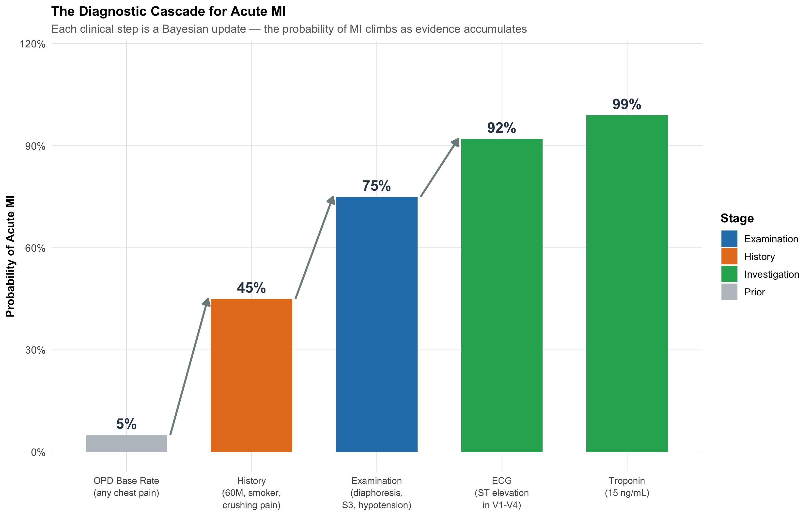
Figure 5.1: The Diagnostic Cascade: How Probability Climbs with Each Piece of Evidence. This is what you do every day — Bayes’ theorem formalises it.
The Key Insight
Investigations are most informative when ordered at the right clinical moment. This is exactly what the Pathology Department audit discovered:
Faculty order CBCs after history and examination have raised suspicion → high pre-test probability → more abnormal results
Residents order CBCs early, broadly, “just to check” → low pre-test probability → mostly normal results
The test didn’t change. The clinical context did. And that context — the pre-test probability — is the single most powerful determinant of whether a test result is meaningful.
5.4 Part 2: The Language of Uncertainty — Basic Probability Rules
Before we formalise Bayesian updating, we need three fundamental rules. Each is illustrated with a clinical scenario you’ll encounter as an intern.
Rule 1: The Complement Rule
\[P(\text{not } A) = 1 - P(A)\]
Clinical example: A drug’s package insert says 15% of patients develop nausea. What’s the probability a given patient will not develop nausea?
This sounds trivial, but it matters for risk communication: telling a patient “85% of people tolerate this drug without nausea” is more reassuring than “15% get nauseous” — even though they’re mathematically identical.
Clinical example: Blood group — P(Group A or Group B). Since a person can’t be both A and B, just add the individual prevalences.
Non-mutually exclusive events (can overlap):
\[P(A \text{ or } B) = P(A) + P(B) - P(A \text{ and } B)\]
Clinical example: At a screening camp in rural MP, prevalence of diabetes is 12% and hypertension is 25%. But 6% have both (metabolic syndrome overlap). What fraction have at least one?
\[P(\text{DM or HTN}) = 0.12 + 0.25 - 0.06 = 0.31 \text{ or } 31\%\]
If you simply added 12% + 25% = 37%, you’d overcount the 6% who have both conditions.
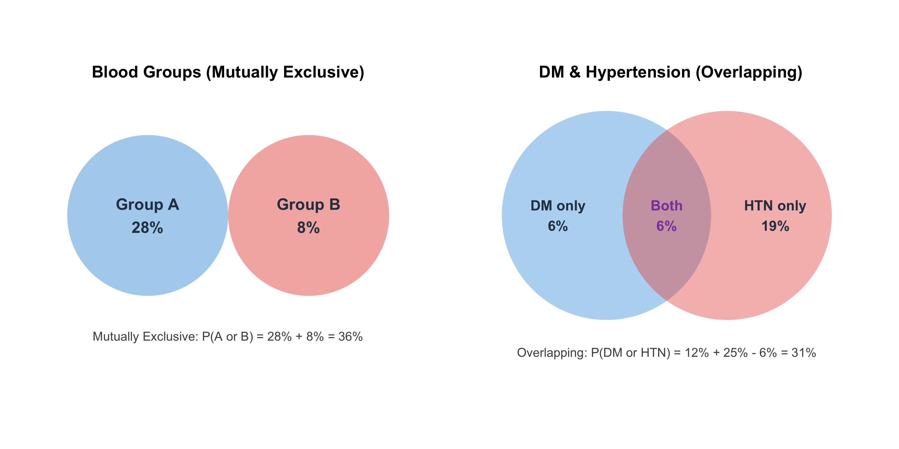
Figure 5.2: The Addition Rule: Why you can’t just add prevalences when conditions overlap. The 6% with both diabetes AND hypertension would be double-counted.
Rule 3: The Multiplication Rule (AND)
Independent events:
\[P(A \text{ and } B) = P(A) \times P(B)\]
Dependent events:
\[P(A \text{ and } B) = P(A) \times P(B|A)\]
Clinical example — independent events: Blood culture contamination rate is about 3% per bottle. If a patient has two bottles drawn (from separate venepunctures), and contamination events are independent, what’s the probability both are contaminated?
This is why two positive blood cultures with the same organism are far more convincing than one — the probability of both being contaminants by chance is less than 1 in 1000.
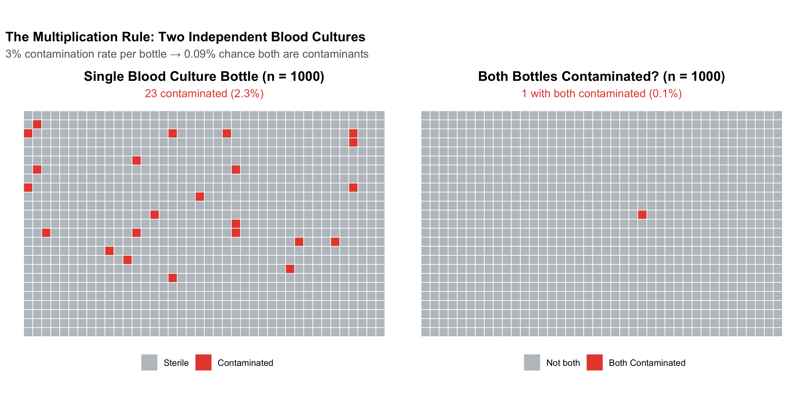
Figure 5.3: Why Two Positive Blood Cultures Are Much More Convincing Than One. The multiplication rule shows that dual contamination is extremely unlikely if bottles are independently drawn.
Independence vs Dependence in the Ward
Scenario
Independent or Dependent?
Why?
Two blood cultures from the same bacteraemic patient
Dependent
If the patient has bacteraemia, both bottles will grow the organism. P(Bottle 2+ | Bottle 1+) >> P(Bottle 2+)
Blood cultures from two unrelated patients on the same ward
Independent
One patient’s bacteraemia doesn’t cause another’s
Side effect in Patient A and Patient B taking the same drug
Independent
Each patient’s reaction is their own biology
Two joints affected in the same patient with rheumatoid arthritis
Dependent
Systemic disease means joint involvement is correlated
Common Mistake: Assuming Independence
Treating dependent events as independent is a common error. If a patient has one positive blood culture from two bottles drawn at the same time from the same arm, the two results are not independent — the probability of contamination is correlated because the same skin site was used. This is why guidelines require separate venepuncture sites.
5.5 Part 3: Conditional Probability — Why Direction Matters
This is the single most important concept in diagnostic reasoning. It’s also where most clinical errors happen.
The Two Directions
Conditional probability answers: “Given that one thing is true, what’s the probability of another?”
\[P(A|B) = \frac{P(A \text{ and } B)}{P(B)}\]
In diagnosis, there are two critical conditional probabilities that look similar but are very different:
Table 5.1: The Two Directions of Conditional Probability in Diagnosis
Question
In Words
Name
Who Uses It
P(Test+ | Disease)
If the patient HAS the disease, what is the chance the test is positive?
Sensitivity
Lab scientists, test developers
P(Disease | Test+)
If the test IS positive, what is the chance the patient has the disease?
Positive Predictive Value (PPV)
Clinicians making treatment decisions
The Pathology Department Revisited
Let’s return to Dr. Mehra’s observation. The CBC has the same analytical sensitivity regardless of who ordered it. But the clinical yield (the fraction of abnormal CBCs that are clinically significant) differs:
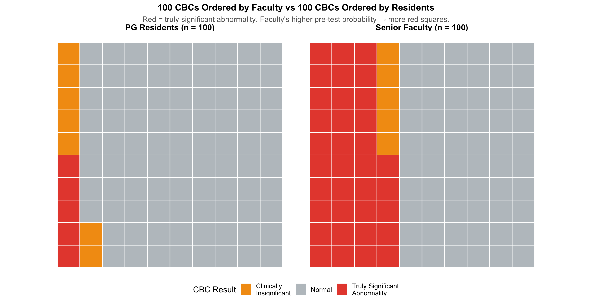
Figure 5.4: Same Test, Different Yield: The CBC ordered by faculty has higher PPV because the pre-test probability is higher. This is conditional probability in action.
Same laboratory. Same test. Same technician. The difference is entirely due to the pre-test probability — the clinical context in which the test was ordered. Faculty aren’t “better at reading CBCs.” They’re better at selecting who needs one. And that selection IS conditional probability.
Confusing these two is the single most common probability error in clinical medicine. A test can be 95% sensitive (high P(Test+|Disease)) and still have a PPV of only 16% (low P(Disease|Test+)) if the disease is rare.
Sensitivity is about the test. PPV is about the patient.
5.6 Part 4: Probability and Odds — Two Languages for the Same Thing
Clinicians typically think in probabilities: “There’s about a 30% chance this is a PE.” But for Bayesian updating, odds are far more convenient because they turn Bayes’ theorem into a single multiplication.
Table 5.2: Probability and Odds: A Clinical Lookup Table
Probability
Odds
Clinical Example
1%
1:99
Breast cancer in 45-year-old at screening
5%
1:19
PE with low Wells score
10%
1:9
TB in symptomatic rural patient (MP)
20%
1:4
PE with moderate Wells score
33%
1:2
Malaria during monsoon in endemic zone
50%
1:1
Coin flip — no clinical information
67%
2:1
Dengue in febrile patient during Bhopal monsoon
80%
4:1
MI with classic presentation + ECG changes
90%
9:1
Bacteraemia when blood culture positive x2
95%
19:1
STEMI with ST elevation + troponin 20x ULN
99%
99:1
Confirmed diagnosis — near certainty
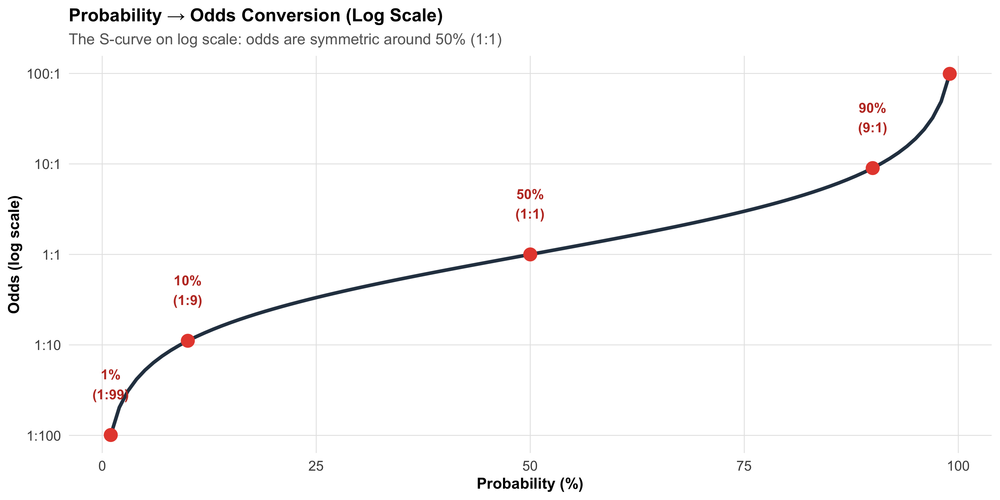
Figure 5.5: Probability and Odds Are Two Representations of the Same Uncertainty. Note: odds scale is non-linear — small changes in probability near 0% or 100% correspond to large changes in odds.
Why Odds Matter
The Bayesian update is beautifully simple with odds:
This looks intimidating. But it simply says: “The probability of disease given a positive test depends on the test’s sensitivity AND specificity AND how common the disease is.”
Figure 5.6: Natural Frequency Tree: Dengue NS1 Test During Monsoon (n = 1000 febrile patients). PPV = 128 / (128 + 43) = 75%. Three-quarters of positive tests are true dengue.
Now the Same Test in January
Dengue prevalence in January in Bhopal: ~0.5%. The same test, the same lab:
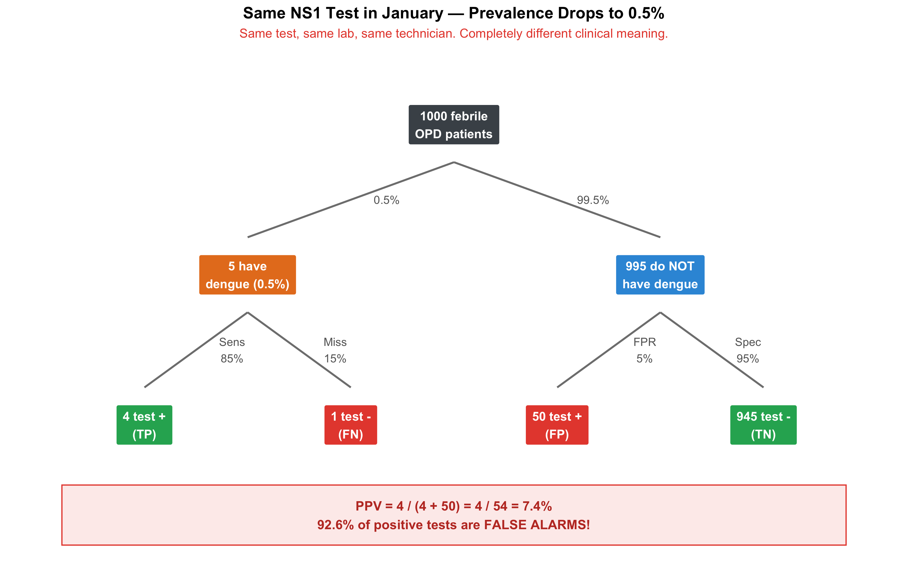
Figure 5.7: Same NS1 Test in January (n = 1000 febrile patients). PPV drops from 75% to just 8%! Most positive results are now false alarms.
The PPV-Prevalence Curve
Let’s see this relationship continuously:
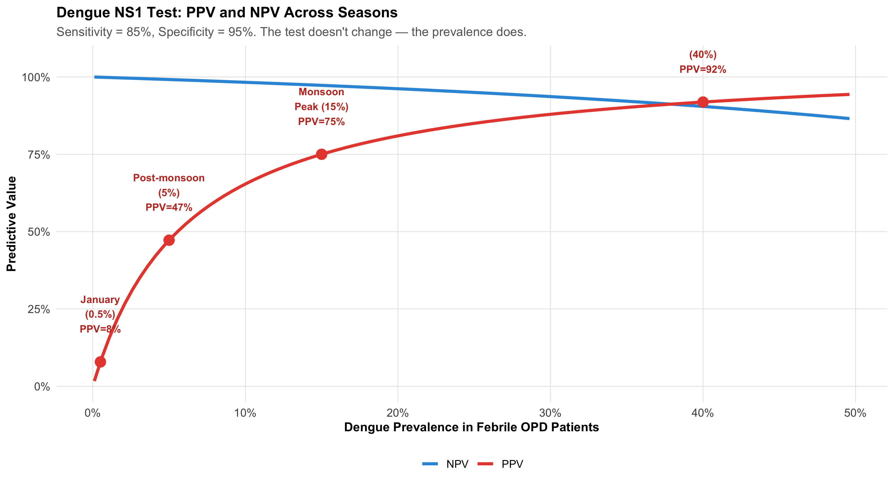
Figure 5.8: PPV vs Prevalence for the Dengue NS1 Test. The same test is clinically useful during monsoon (PPV 75%) but misleading in January (PPV 7%). The test didn’t change — the clinical context did.
The Mammography Example: Natural Frequencies
This is the classic example that exposed how badly doctors misunderstand test results.
Figure 5.9: The Mammography Screening Dilemma: Of 78 positive mammograms, only 9 are true cancer. PPV = 11.5%. This is the example that revolutionised understanding of Bayesian reasoning in medicine.
Gigerenzer’s Revolution
Gerd Gigerenzer showed that when you present doctors with frequencies (“9 out of 78 positive tests are true cancer”) instead of probabilities (“what is the probability of cancer given a positive mammogram?”), accuracy jumped from ~15% of doctors giving the right answer to ~85%. Natural frequencies bypass the confusion of conditional probability.
Takeaway: When reasoning at the bedside, always think in terms of “out of 1000 patients like this…”
5.8 Part 6: The Diagnostic Cascade — Sequential Bayesian Updates
Now we bring everything together. Real clinical reasoning doesn’t involve a single test — it’s a cascade of evidence, each piece updating the probability.
Clinical Vignette: Is This SLE?
A 25-year-old woman presents to Medicine OPD at AIIMS Bhopal with 3 months of joint pain, oral ulcers, and a photosensitive rash.
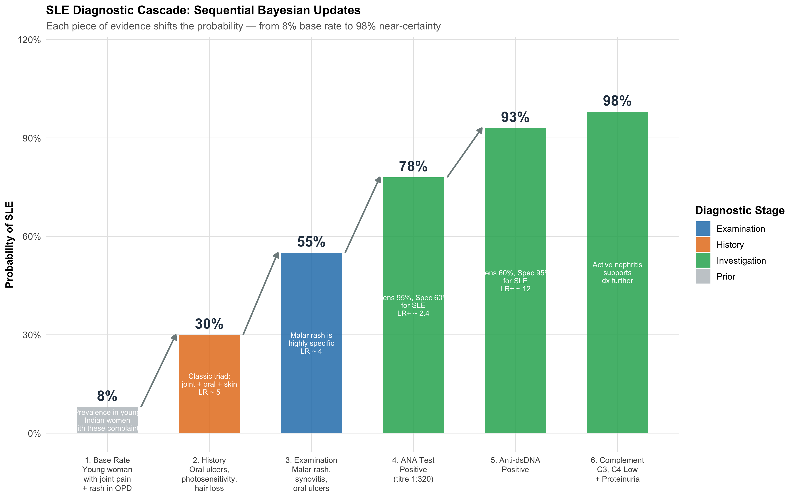
Figure 5.10: Sequential Bayesian Updates in Diagnosing SLE. Each clinical and laboratory finding shifts the probability — no single test ‘diagnoses’ SLE. The cascade IS the diagnosis.
Walking Through the Math
Let’s trace the Bayesian updates step by step using likelihood ratios:
Table 5.3: Step-by-Step Bayesian Updates for SLE Diagnosis
Step
Pre-test Probability
Likelihood Ratio
Post-test Probability
Clinical Reasoning
1. Base rate
—
—
8%
Prevalence in young Indian women presenting with joint pain + rash
2. History (oral ulcers + photosensitivity + alopecia)
High sensitivity but moderate specificity — rules out if negative
5. Anti-dsDNA positive
78%
~12
93%
Moderate sensitivity but very high specificity — strong confirmatory evidence
6. Low C3/C4 + proteinuria
93%
~4
98%
Consistent with lupus nephritis — further confirmatory evidence
The Clinical Lesson
No single test “diagnoses” SLE. The ANA has 95% sensitivity but only 60% specificity — it’s a screening test (high sensitivity for rule-out). Anti-dsDNA has 60% sensitivity but 95% specificity — it’s a confirmatory test (high specificity for rule-in).
The diagnosis emerges from the accumulation of evidence — each step building on the last. This sequential updating is exactly what experienced clinicians do intuitively. Bayes’ theorem simply makes it explicit and quantifiable.
This is also why Dr. Mehra’s CBC finding makes sense: faculty are ordering tests at step 3 or 4 of their mental cascade (high pre-test probability). Residents are ordering at step 1 (low pre-test probability). The test’s information yield depends on where in the cascade it’s deployed.
Visualising Sequential Updates: The Probability Waterfall
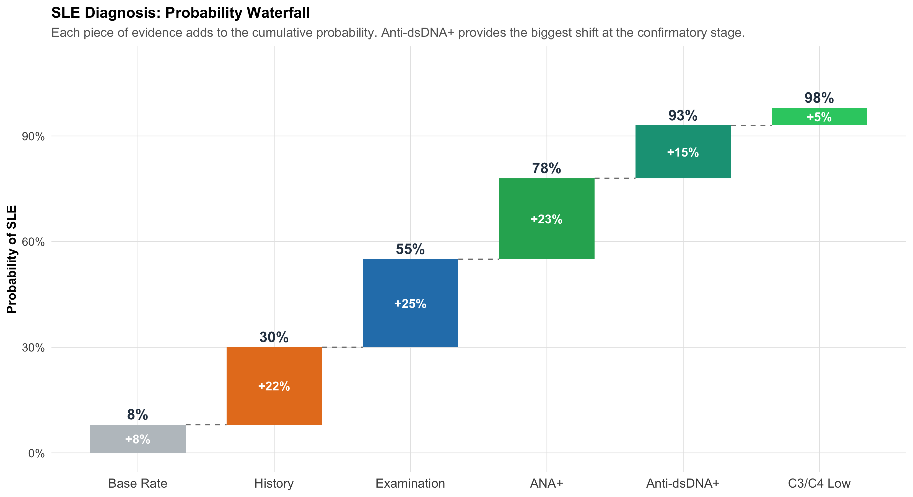
Figure 5.11: Probability Waterfall for SLE Diagnosis. Green bars show increases from each piece of evidence. The steeper the rise, the more informative that evidence was.
A Second Cascade: Ruling OUT Pulmonary Embolism
Not all cascades go upward. Sometimes the goal is to rule out a dangerous diagnosis. Here, evidence pushes the probability down.
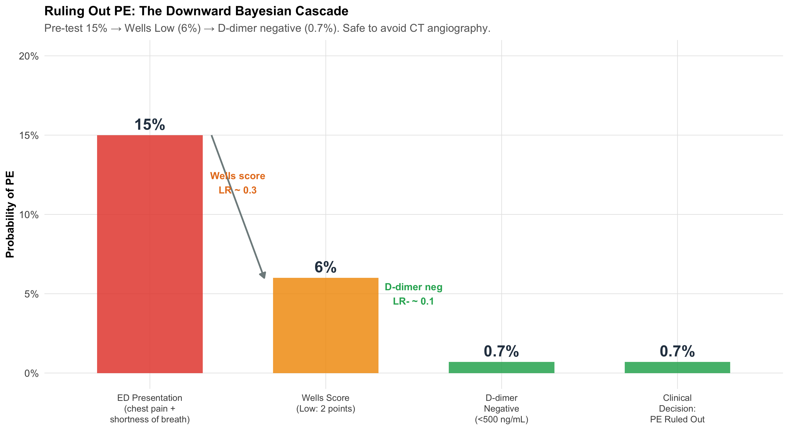
Figure 5.12: Ruling Out PE: A Downward Bayesian Cascade. Wells score and D-dimer together bring the probability low enough to safely avoid CT angiography.
The clinical reasoning:
Young woman in ED with pleuritic chest pain + dyspnoea. Pre-test probability of PE ~15%.
Wells score = 2 (low risk). This acts like a negative test (LR ~0.3). Probability drops to ~6%.
D-dimer < 500 ng/mL (negative). LR- ~0.1. Probability drops to ~0.7%.
At 0.7%, it’s safe to rule out PE without CT pulmonary angiography.
This is Bayesian reasoning saving the patient from unnecessary radiation, contrast dye, and cost. The experienced clinician who “just knows” this patient doesn’t need a CTPA is actually doing rapid Bayesian updates in their head.
5.9 Part 7: Three Probability Fallacies That Harm Patients
Fallacy 1: The Base Rate Fallacy
The error: Ignoring how common the disease is (prevalence) when interpreting a test result.
Clinical example: During the COVID-19 pandemic, a district hospital screens all admissions with a rapid antigen test (95% sensitivity, 90% specificity). The prevalence at that time is only 2%.
A patient tests positive. The administrator says: “The test is 95% accurate, so this patient almost certainly has COVID. Isolate immediately.”
The reality: PPV = 16%. The patient is 5 times more likely to NOT have COVID.
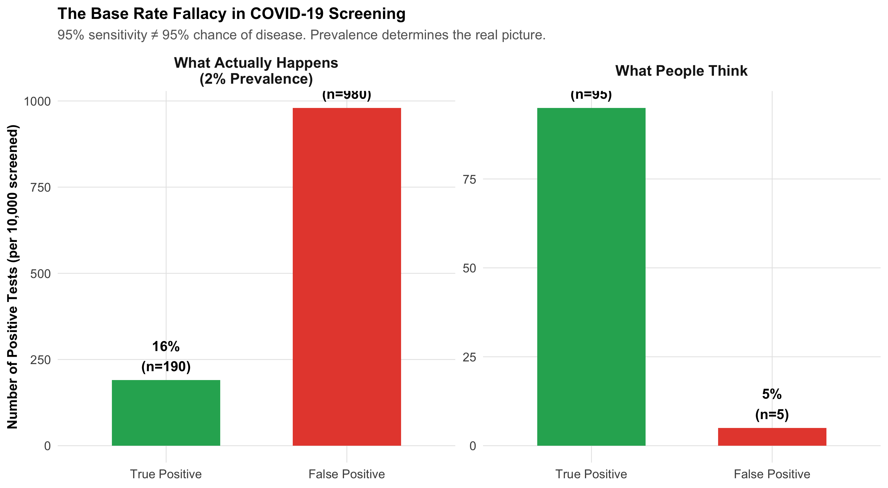
Figure 5.13: The Base Rate Fallacy: Why ‘95% Accurate’ Doesn’t Mean ‘95% Chance of Disease’. At 2% prevalence, most positive results are false alarms.
Fallacy 2: The Prosecutor’s Fallacy
The error: Confusing P(Evidence | Hypothesis) with P(Hypothesis | Evidence).
Clinical version: A test has 99.9% sensitivity for a rare disease. The patient tests positive. The doctor says: “There’s only a 0.1% chance this positive result is wrong.”
The error: The doctor confused P(Test+ | Disease) = 99.9% with P(Disease | Test+), which depends on prevalence. If the disease affects 1 in 100,000 people, even with 99.9% sensitivity and 99.9% specificity, the PPV is only about 50%.
Forensic version: A DNA match probability is 1 in 10,000. The prosecutor says: “There’s only 1 in 10,000 chance the defendant is innocent.” But in a city of 10 million, ~1,000 people share that profile. P(match | innocent) \(\neq\) P(innocent | match).
Fallacy 3: The Gambler’s Fallacy
The error: Believing that past independent events influence future ones.
Clinical example: A microbiologist has examined five sputum samples from different patients today — all negative for AFB. He says: “The next one is due to be positive.”
Each sputum sample is from a different patient with a different disease status. The probability of the sixth being positive depends on that patient’s disease status, not on the previous five results. Past independent events do not affect future ones.
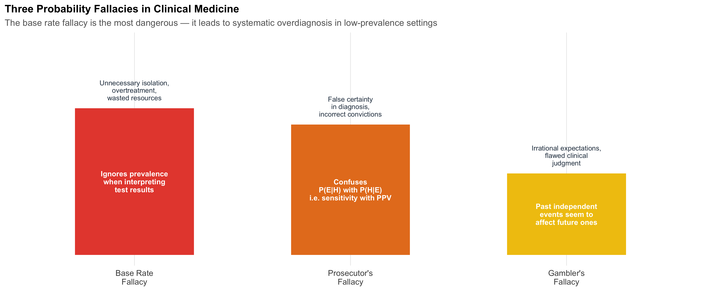
Figure 5.14: Three Probability Fallacies and Their Clinical Consequences. Recognising these errors is essential for safe diagnostic reasoning.
5.10 Summary: The Big Picture
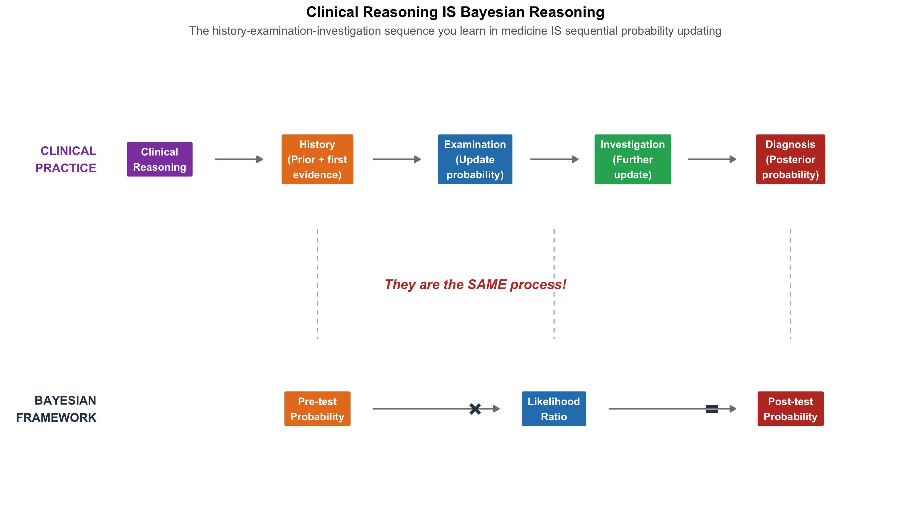
Figure 5.15: Module 4 Summary: The complete framework connecting clinical reasoning to probability theory.
The five takeaways from this module:
Clinical diagnosis is sequential Bayesian updating — the symptoms → signs → investigations approach IS probability in action.
Pre-test probability is the single most important factor in determining whether a test result is meaningful. This is why faculty have higher CBC abnormality rates than residents — not because of the test, but because of the clinical context.
P(Disease|Test+) \(\neq\) P(Test+|Disease) — confusing sensitivity with PPV is the most dangerous probability error in medicine.
Natural frequencies (“think in 1000 patients”) make Bayesian calculations intuitive and visual.
Post-test odds = Pre-test odds × LR — the single formula that connects clinical judgment to test interpretation.
5.11 Further Learning Resources
Video Lectures
3Blue1Brown — “Bayes’ theorem, the geometry of changing beliefs” (YouTube) Best visual explanation of Bayes’ theorem you’ll find anywhere.
StatQuest with Josh Starmer — “Bayes’ Theorem” (YouTube) Clear, step-by-step walkthrough with examples.
Veritasium — “The Bayesian Trap” (YouTube) Engaging exploration of why humans struggle with Bayesian reasoning.
Textbooks
Gigerenzer G (2002). Reckoning with Risk: Learning to Live with Uncertainty. Penguin Books. The classic on natural frequencies and why doctors fail at probability. Must-read.
Sackett DL et al (2005). Clinical Epidemiology: A Basic Science for Clinical Medicine. 3rd ed. Ch 4: Diagnosis. The gold standard for applying probability to clinical decision-making.
Bland M (2015). An Introduction to Medical Statistics. 4th ed. Ch 20: Clinical diagnostic tests. Clear statistical treatment with medical examples.
Indian Context
ICMR Guidelines on COVID-19 Testing — Discusses test selection based on prevalence and clinical context.
RNTCP/NTEP Guidelines — GeneXpert sensitivity/specificity data in Indian populations.
5.12 Practice MCQs: NEET PG Level
Q1. At a teaching hospital, senior faculty order troponin tests on 50 patients and get 20 positive results (40% positivity). Residents order troponin on 200 patients and get 24 positive results (12% positivity). Which is the most likely explanation for this difference?
✘ A. The troponin assay is less sensitive when residents order it — The same assay is used regardless of who orders it. Analytical sensitivity doesn’t depend on the ordering physician.
✘ B. Residents are ordering troponin on patients with lower probability of MI — Close — but this is about pre-test probability, not exactly ‘lower probability of MI’. Read the next option.
✔ C. Faculty have a higher pre-test probability because they order troponin after stronger clinical suspicion — Correct! This is exactly the CBC mystery from our Pathology hook. Faculty order tests later in the diagnostic cascade — after history and examination have raised suspicion — giving a higher pre-test probability and therefore a higher proportion of true positives. Same test, different clinical context, different yield.
✘ D. Faculty patients are sicker overall — While faculty may see complex cases, the key insight is about selective ordering based on clinical assessment (pre-test probability), not patient severity per se. A sick patient without chest pain wouldn’t have troponin ordered.
Q2. A drug information leaflet states: “5% of patients develop hepatotoxicity. Among those who develop hepatotoxicity, 80% are reversible.” What is the probability that a patient starting this drug will develop irreversible hepatotoxicity?
✘ A. 85% — This incorrectly adds the two probabilities. The question requires multiplication: 5% chance of hepatotoxicity AND 20% chance it’s irreversible.
✔ B. 1% — Correct! Using the multiplication rule: P(hepatotoxicity AND irreversible) = P(hepatotoxicity) × P(irreversible | hepatotoxicity) = 0.05 × 0.20 = 0.01 = 1%. These are dependent events — irreversibility is conditional on developing hepatotoxicity first.
✘ C. 4% — This would be 5% × 80% = 4%, which is the probability of REVERSIBLE hepatotoxicity. The question asks about irreversible (20% of the 5%).
✘ D. 20% — 20% is the probability of irreversibility GIVEN hepatotoxicity has occurred. The question asks about the overall probability from baseline, which requires multiplying by the 5% hepatotoxicity rate.
Q3. In a screening camp in rural MP, diabetes prevalence is 10% and hypertension prevalence is 22%. If 5% of attendees have both conditions, what is the probability that a randomly selected attendee has at least one of these conditions?
✘ A. 32% — This simply adds 10% + 22% = 32%, which double-counts the 5% who have both. You must subtract the overlap.
✔ B. 27% — Correct! Using the addition rule for non-mutually exclusive events: P(DM or HTN) = P(DM) + P(HTN) − P(DM and HTN) = 10% + 22% − 5% = 27%. Without subtracting the overlap, you’d count the 5% with both conditions twice.
✘ C. 37% — This adds all three numbers (10 + 22 + 5 = 37). The 5% overlap should be subtracted, not added.
✘ D. 17% — This incorrectly subtracts the overlap from only one condition (22% − 5% = 17%). The correct approach is P(DM) + P(HTN) − P(both).
Q4. Two blood culture bottles are drawn from separate venepuncture sites. The contamination rate per bottle is 3%. Both grow Staphylococcus epidermidis. Assuming independent contamination events, what is the probability both are contaminants?
✘ A. 6% — This adds the probabilities (3% + 3% = 6%), which is the addition rule. But the question asks about both being contaminated simultaneously, which requires multiplication.
✘ B. 3% — This is the contamination rate for a single bottle. Two independent bottles both being contaminated requires multiplying: 3% × 3%.
✔ C. 0.09% — Correct! For independent events: P(both contaminated) = P(bottle 1 contaminated) × P(bottle 2 contaminated) = 0.03 × 0.03 = 0.0009 = 0.09%. This is why two positive blood cultures with the same organism are much more convincing than one — the probability of dual contamination is less than 1 in 1000.
✘ D. 1.5% — This halves the single-bottle rate, but there’s no reason to do so. The multiplication rule for independent events gives 0.03 × 0.03 = 0.0009.
Q5. A dengue NS1 test has 85% sensitivity and 95% specificity. During monsoon in Bhopal, dengue prevalence among febrile OPD patients is 15%. In January, prevalence drops to 0.5%. What happens to the PPV?
✘ A. PPV stays the same — it depends on the test, not the season — PPV depends critically on prevalence, not just on the test’s sensitivity and specificity. The same test gives very different PPV in different prevalence settings.
✔ B. PPV drops from about 75% to about 8% — most January positives are false alarms — Correct! Monsoon: PPV = 128/(128+43) = 75%. January: PPV = 4/(4+50) = 7.4%. The same test, same lab, same technician — but at 0.5% prevalence, 92% of positive results are false positives. This is why experienced physicians don’t order NS1 in January unless clinical suspicion is very high.
✘ C. PPV increases in January because there are fewer true cases to compete with — This is backwards. Fewer true cases means the few true positives are outnumbered by false positives, so PPV decreases, not increases.
✘ D. PPV drops slightly from 85% to 80% — This confuses sensitivity (85%) with PPV. PPV at 15% prevalence is about 75%, not 85%, and it drops much more dramatically than 5% when prevalence falls to 0.5%.
Q6. A 25-year-old woman presents with joint pain, malar rash, and oral ulcers. ANA is positive (sensitivity 95%, specificity 60% for SLE). A doctor says: “ANA is 95% sensitive, so there’s a 95% chance she has SLE.” Which probability fallacy is this?
✘ A. Gambler’s fallacy — The gambler’s fallacy is about believing past independent events affect future outcomes (e.g., ‘the next sputum must be positive’). This scenario involves confusing two different conditional probabilities.
✘ B. Base rate fallacy — Close — the base rate fallacy involves ignoring prevalence. Here the doctor is doing something more specific: confusing the direction of the conditional probability (sensitivity vs PPV).
✔ C. Prosecutor’s fallacy — confusing P(ANA+ | SLE) with P(SLE | ANA+) — Correct! The doctor confused sensitivity P(Test+|Disease) = 95% with PPV P(Disease|Test+), which depends on prevalence. With ANA’s specificity of only 60%, many non-SLE conditions (RA, infections, healthy people) also give positive ANA. The actual P(SLE|ANA+) depends on the pre-test probability from clinical assessment.
✘ D. Confirmation bias — While confirmation bias is a real clinical problem, this specific error has a precise name: the prosecutor’s fallacy (or transposed conditional). It’s about confusing the two directions of conditional probability.
Q7. A patient in the ED has a 20% pre-test probability of PE based on Wells score. D-dimer is negative (LR- = 0.1). What is the approximate post-test probability of PE?
✘ A. 10% — This simply halves the pre-test probability, but doesn’t use the likelihood ratio correctly. The Bayesian update requires converting to odds first.
✔ B. About 2.4% — Correct! Pre-test odds = 0.20/0.80 = 0.25. Post-test odds = 0.25 × 0.1 = 0.025. Post-test probability = 0.025/1.025 = 2.4%. A negative D-dimer with LR- = 0.1 drops the probability from 20% to ~2.4% — low enough to safely rule out PE without CT angiography. This is Bayes’ theorem saving the patient from unnecessary radiation and contrast.
✘ C. 2% — Very close but not precise. The exact calculation gives 2.4%. In clinical practice this level of precision rarely matters, but for MCQ purposes: pre-test odds = 0.25, post-test odds = 0.025, post-test probability = 0.025/1.025 = 2.44%.
✘ D. 18% — This subtracts 2% from 20%, but that’s not how Bayesian updating works. The likelihood ratio multiplies the odds, not subtracts from the probability.
5.13 References
Source Code
---title: "Probability and Clinical Reasoning"subtitle: "Why Experienced Clinicians Order Fewer Tests — and Get More Answers"description: "Discover that the symptoms-signs-investigations approach you learn in clinical medicine IS Bayesian reasoning. Master probability rules, conditional probability, Bayes' theorem, and natural frequencies through real clinical scenarios."categories: [probability, bayes-theorem, clinical-reasoning, diagnostic-reasoning]---```{r}#| label: setup#| include: falselibrary(tidyverse)library(kableExtra)library(patchwork)library(scales)source("../R/mcq.R")set.seed(42)theme_clean <-function() {theme_minimal(base_size =12) +theme(plot.title =element_text(face ="bold", size =13),plot.subtitle =element_text(size =11, color ="gray40"),panel.grid.minor =element_blank(),panel.grid.major =element_line(color ="gray90", linewidth =0.3),axis.text =element_text(size =10),axis.title =element_text(size =11, face ="bold"),legend.position ="bottom",legend.title =element_text(face ="bold") )}```::: {.callout-note appearance="minimal"}**Lecture slides for this module:** [Open Slides](../slides/04-probability-slides.html){target="_blank"}:::## Learning ObjectivesBy the end of this module, you will be able to:1. Recognise that the **history → examination → investigation** sequence is sequential Bayesian updating2. Apply the **complement, addition, and multiplication** rules to clinical scenarios3. Distinguish **independent** from **dependent** events in medicine4. Calculate and interpret **conditional probability** P(A|B) and explain why P(Disease|Test+) $\neq$ P(Test+|Disease)5. Convert between **probability and odds**6. Apply **Bayes' theorem** using natural frequencies and the odds form7. Trace a diagnostic cascade as **sequential Bayesian updates**8. Identify the **base rate fallacy**, **prosecutor's fallacy**, and **gambler's fallacy** in clinical settings---:::{.clinical-hook}## The CBC Mystery in the Pathology DepartmentAt a monthly lab audit meeting at a teaching hospital, Dr. Mehra from the Pathology Department presents a curious finding:**CBCs ordered by senior faculty have a 40% abnormality rate. CBCs ordered by PG residents have only a 12% abnormality rate.**The Pathology HoD asks the obvious question: *"Are residents ordering unnecessary tests? Or are faculty members missing patients who need testing?"*The answer is **neither**. What's happening is **Bayes' theorem playing out in the hospital corridors every single day** — without anyone realising it.Senior faculty order a CBC when their clinical assessment has *already raised suspicion* — a patient looks pale, has unexplained fatigue, or has a bleeding history. Their **pre-test probability** of finding something abnormal is high. So naturally, a larger fraction of their CBCs come back abnormal.Residents, still learning to filter, cast a wider net. They order CBCs as part of routine work-up, admission protocols, or "just to be safe." Their **pre-test probability** is lower. So most of their CBCs come back normal — not because the test is worse, but because the clinical context is different.**The same test, the same laboratory, the same technician — but a dramatically different yield.** This is the power of pre-test probability, and it governs every diagnostic decision you will ever make.This module will teach you the mathematical framework behind this everyday clinical reality.:::---## Part 1: You Already Think Like BayesEvery clinician — from the most senior professor to a final-year MBBS student in their first clinical posting — already does Bayesian reasoning. You just don't call it that.Consider what happens when a patient walks into Medicine OPD:**Before you see the patient**, you already have a rough sense of what's common in your setting — the *base rate*. In a teaching hospital OPD in central India, chest pain is far more likely to be musculoskeletal or GERD than an acute MI.**History changes your estimate.** A 28-year-old woman with sharp, localised, movement-related chest pain? MI probability drops to near zero. A 60-year-old male diabetic smoker with crushing retrosternal pain radiating to the left arm and jaw, with diaphoresis? MI probability shoots up dramatically.**Examination updates further.** If that 60-year-old has an S3 gallop, hypotension, and bilateral basal creps — your clinical suspicion rises even more.**Investigations confirm or refute.** ECG shows ST-elevation. Troponin I is 15 ng/mL. Now you're near-certain.This is **sequential Bayesian updating** — each piece of evidence shifts your probability estimate up or down, step by step.```{r}#| label: fig-diagnostic-cascade#| fig-cap: "The Diagnostic Cascade: How Probability Climbs with Each Piece of Evidence. This is what you do every day — Bayes' theorem formalises it."#| echo: false#| fig-width: 11#| fig-height: 7cascade <-tibble(step =factor(c("OPD Base Rate\n(any chest pain)","History\n(60M, smoker,\ncrushing pain)","Examination\n(diaphoresis,\nS3, hypotension)","ECG\n(ST elevation\nin V1-V4)","Troponin\n(15 ng/mL)"),levels =c("OPD Base Rate\n(any chest pain)","History\n(60M, smoker,\ncrushing pain)","Examination\n(diaphoresis,\nS3, hypotension)","ECG\n(ST elevation\nin V1-V4)","Troponin\n(15 ng/mL)")),probability =c(5, 45, 75, 92, 99),stage =c("Prior", "History", "Examination", "Investigation", "Investigation"),label_colour =c("grey30", "#c0392b", "#c0392b", "#c0392b", "#c0392b"))ggplot(cascade, aes(x = step, y = probability)) +# Bargeom_col(aes(fill = stage), width =0.65) +# Connecting arrowsgeom_segment(data = cascade[-nrow(cascade), ],aes(x =as.numeric(step) +0.35, xend =as.numeric(step) +0.65,y = probability, yend =lead(probability)),arrow =arrow(length =unit(0.25, "cm"), type ="closed"),colour ="#7f8c8d", linewidth =0.9,inherit.aes =FALSE ) +# Percentage labelsgeom_text(aes(label =paste0(probability, "%")),vjust =-0.6, fontface ="bold", size =5, colour ="#2c3e50") +scale_fill_manual(values =c("Prior"="#bdc3c7","History"="#e67e22","Examination"="#2980b9","Investigation"="#27ae60"),name ="Stage" ) +scale_y_continuous(limits =c(0, 115), labels =function(y) paste0(y, "%")) +labs(title ="The Diagnostic Cascade for Acute MI",subtitle ="Each clinical step is a Bayesian update — the probability of MI climbs as evidence accumulates",x =NULL,y ="Probability of Acute MI" ) +theme_clean() +theme(axis.text.x =element_text(size =9, lineheight =1.1),legend.position ="right")```:::{.key-concept}### The Key Insight**Investigations are most informative when ordered at the right clinical moment.** This is exactly what the Pathology Department audit discovered:- **Faculty** order CBCs *after* history and examination have raised suspicion → **high pre-test probability** → more abnormal results- **Residents** order CBCs early, broadly, "just to check" → **low pre-test probability** → mostly normal resultsThe test didn't change. The clinical context did. And that context — the pre-test probability — is the single most powerful determinant of whether a test result is meaningful.:::---## Part 2: The Language of Uncertainty — Basic Probability RulesBefore we formalise Bayesian updating, we need three fundamental rules. Each is illustrated with a clinical scenario you'll encounter as an intern.### Rule 1: The Complement Rule$$P(\text{not } A) = 1 - P(A)$$**Clinical example:** A drug's package insert says 15% of patients develop nausea. What's the probability a given patient will *not* develop nausea?$$P(\text{no nausea}) = 1 - 0.15 = 0.85 \text{ or } 85\%$$This sounds trivial, but it matters for risk communication: telling a patient *"85% of people tolerate this drug without nausea"* is more reassuring than *"15% get nauseous"* — even though they're mathematically identical.### Rule 2: The Addition Rule (OR)**Mutually exclusive events** (can't happen together):$$P(A \text{ or } B) = P(A) + P(B)$$**Clinical example:** Blood group — P(Group A or Group B). Since a person can't be both A and B, just add the individual prevalences.**Non-mutually exclusive events** (can overlap):$$P(A \text{ or } B) = P(A) + P(B) - P(A \text{ and } B)$$**Clinical example:** At a screening camp in rural MP, prevalence of diabetes is 12% and hypertension is 25%. But 6% have *both* (metabolic syndrome overlap). What fraction have *at least one*?$$P(\text{DM or HTN}) = 0.12 + 0.25 - 0.06 = 0.31 \text{ or } 31\%$$If you simply added 12% + 25% = 37%, you'd overcount the 6% who have both conditions.```{r}#| label: fig-venn-addition#| fig-cap: "The Addition Rule: Why you can't just add prevalences when conditions overlap. The 6% with both diabetes AND hypertension would be double-counted."#| echo: false#| fig-width: 10#| fig-height: 5# Create Venn-style circlescircle_pts <-function(cx, cy, r, n =200) { theta <-seq(0, 2* pi, length.out = n)tibble(x = cx + r *cos(theta), y = cy + r *sin(theta))}p_me <-ggplot() +geom_polygon(data =circle_pts(1.8, 2, 1.0), aes(x, y),fill ="#3498db", alpha =0.45) +geom_polygon(data =circle_pts(3.8, 2, 1.0), aes(x, y),fill ="#e74c3c", alpha =0.45) +annotate("text", x =1.8, y =2, label ="Group A\n28%",size =4.5, fontface ="bold", colour ="#2c3e50") +annotate("text", x =3.8, y =2, label ="Group B\n8%",size =4.5, fontface ="bold", colour ="#2c3e50") +annotate("text", x =2.8, y =0.5,label ="Mutually Exclusive: P(A or B) = 28% + 8% = 36%",size =3.5, colour ="grey30") +coord_equal(xlim =c(0.3, 5.3), ylim =c(0, 3.5)) +labs(title ="Blood Groups (Mutually Exclusive)") +theme_void(base_size =11) +theme(plot.title =element_text(face ="bold", hjust =0.5))p_nme <-ggplot() +geom_polygon(data =circle_pts(2.0, 2, 1.3), aes(x, y),fill ="#3498db", alpha =0.40) +geom_polygon(data =circle_pts(3.5, 2, 1.3), aes(x, y),fill ="#e74c3c", alpha =0.40) +annotate("text", x =1.4, y =2, label ="DM only\n6%",size =4, fontface ="bold", colour ="#2c3e50") +annotate("text", x =4.1, y =2, label ="HTN only\n19%",size =4, fontface ="bold", colour ="#2c3e50") +annotate("text", x =2.75, y =2, label ="Both\n6%",size =4, fontface ="bold", colour ="#8e44ad") +annotate("text", x =2.75, y =0.3,label ="Overlapping: P(DM or HTN) = 12% + 25% - 6% = 31%",size =3.5, colour ="grey30") +coord_equal(xlim =c(0.3, 5.3), ylim =c(0, 3.5)) +labs(title ="DM & Hypertension (Overlapping)") +theme_void(base_size =11) +theme(plot.title =element_text(face ="bold", hjust =0.5))p_me + p_nme```### Rule 3: The Multiplication Rule (AND)**Independent events:**$$P(A \text{ and } B) = P(A) \times P(B)$$**Dependent events:**$$P(A \text{ and } B) = P(A) \times P(B|A)$$**Clinical example — independent events:** Blood culture contamination rate is about 3% per bottle. If a patient has two bottles drawn (from separate venepunctures), and contamination events are independent, what's the probability *both* are contaminated?$$P(\text{both contaminated}) = 0.03 \times 0.03 = 0.0009 \text{ or } 0.09\%$$This is why **two positive blood cultures with the same organism are far more convincing than one** — the probability of both being contaminants by chance is less than 1 in 1000.```{r}#| label: fig-blood-culture#| fig-cap: "Why Two Positive Blood Cultures Are Much More Convincing Than One. The multiplication rule shows that dual contamination is extremely unlikely if bottles are independently drawn."#| echo: false#| fig-width: 11#| fig-height: 5.5# Icon array for blood culturesset.seed(42)n <-1000# Single bottle: 3% contaminationsingle_bottle <-tibble(id =1:n,contaminated =sample(c(TRUE, FALSE), n, replace =TRUE, prob =c(0.03, 0.97)),row = ((id -1) %%25) +1,col = ((id -1) %/%25) +1)p_single <-ggplot(single_bottle, aes(x = col, y = row,fill = contaminated)) +geom_tile(colour ="white", linewidth =0.3) +scale_fill_manual(values =c("TRUE"="#e74c3c", "FALSE"="#bdc3c7"),labels =c("TRUE"="Contaminated", "FALSE"="Sterile"),name ="") +coord_fixed() +labs(title ="Single Blood Culture Bottle (n = 1000)",subtitle =paste0(sum(single_bottle$contaminated)," contaminated (", round(mean(single_bottle$contaminated)*100, 1), "%)")) +theme_void(base_size =11) +theme(plot.title =element_text(face ="bold", hjust =0.5),plot.subtitle =element_text(hjust =0.5, colour ="#e74c3c"),legend.position ="bottom")# Two bottles: both contaminated = 0.09%both_cont <-tibble(id =1:n,bottle1_cont =sample(c(TRUE, FALSE), n, replace =TRUE, prob =c(0.03, 0.97)),bottle2_cont =sample(c(TRUE, FALSE), n, replace =TRUE, prob =c(0.03, 0.97)),both = bottle1_cont & bottle2_cont,row = ((id -1) %%25) +1,col = ((id -1) %/%25) +1)p_both <-ggplot(both_cont, aes(x = col, y = row, fill = both)) +geom_tile(colour ="white", linewidth =0.3) +scale_fill_manual(values =c("TRUE"="#e74c3c", "FALSE"="#bdc3c7"),labels =c("TRUE"="Both Contaminated", "FALSE"="Not both"),name ="") +coord_fixed() +labs(title ="Both Bottles Contaminated? (n = 1000)",subtitle =paste0(sum(both_cont$both)," with both contaminated (",round(mean(both_cont$both)*100, 2), "%)")) +theme_void(base_size =11) +theme(plot.title =element_text(face ="bold", hjust =0.5),plot.subtitle =element_text(hjust =0.5, colour ="#e74c3c"),legend.position ="bottom")p_single + p_both +plot_annotation(title ="The Multiplication Rule: Two Independent Blood Cultures",subtitle ="3% contamination rate per bottle → 0.09% chance both are contaminants",theme =theme(plot.title =element_text(face ="bold", size =13),plot.subtitle =element_text(size =11, colour ="grey40")))```### Independence vs Dependence in the Ward| Scenario | Independent or Dependent? | Why? ||:---------|:--------------------------|:-----|| Two blood cultures from the **same bacteraemic patient** | **Dependent** | If the patient has bacteraemia, both bottles will grow the organism. P(Bottle 2+ \| Bottle 1+) >> P(Bottle 2+) || Blood cultures from **two unrelated patients** on the same ward | **Independent** | One patient's bacteraemia doesn't cause another's || Side effect in Patient A and Patient B taking the same drug | **Independent** | Each patient's reaction is their own biology || Two joints affected in the **same patient** with rheumatoid arthritis | **Dependent** | Systemic disease means joint involvement is correlated |:::{.common-mistake}### Common Mistake: Assuming IndependenceTreating dependent events as independent is a common error. If a patient has one positive blood culture from two bottles drawn at the same time from the same arm, the two results are **not** independent — the probability of contamination is correlated because the same skin site was used. This is why guidelines require **separate venepuncture sites**.:::---## Part 3: Conditional Probability — Why Direction MattersThis is the single most important concept in diagnostic reasoning. It's also where most clinical errors happen.### The Two DirectionsConditional probability answers: *"Given that one thing is true, what's the probability of another?"*$$P(A|B) = \frac{P(A \text{ and } B)}{P(B)}$$In diagnosis, there are two critical conditional probabilities that look similar but are **very different**:```{r}#| label: tbl-two-directions#| echo: false#| tbl-cap: "The Two Directions of Conditional Probability in Diagnosis"dir_df <-data.frame(Question =c("P(Test+ | Disease)","P(Disease | Test+)"),`In Words`=c("If the patient HAS the disease, what is the chance the test is positive?","If the test IS positive, what is the chance the patient has the disease?"),Name =c("Sensitivity", "Positive Predictive Value (PPV)"),`Who Uses It`=c("Lab scientists, test developers","Clinicians making treatment decisions"),check.names =FALSE)kable(dir_df, format ="html", escape =FALSE) %>%kable_styling(bootstrap_options =c("striped", "hover"), full_width =TRUE) %>%column_spec(1, bold =TRUE, width ="18%") %>%column_spec(3, bold =TRUE, color ="#c0392b")```### The Pathology Department RevisitedLet's return to Dr. Mehra's observation. The CBC has the same analytical sensitivity regardless of who ordered it. But the **clinical yield** (the fraction of abnormal CBCs that are *clinically significant*) differs:```{r}#| label: fig-cbc-comparison#| fig-cap: "Same Test, Different Yield: The CBC ordered by faculty has higher PPV because the pre-test probability is higher. This is conditional probability in action."#| echo: false#| fig-width: 12#| fig-height: 6# Faculty CBCs: higher pre-test probabilityfaculty_data <-tibble(category =rep(c("Truly Significant\nAbnormality", "Clinically\nInsignificant", "Normal"), c(35, 5, 60)),source ="Senior Faculty (n = 100)") %>%mutate(id =row_number(),row = ((id -1) %%10) +1,col = ((id -1) %/%10) +1)resident_data <-tibble(category =rep(c("Truly Significant\nAbnormality", "Clinically\nInsignificant", "Normal"), c(5, 7, 88)),source ="PG Residents (n = 100)") %>%mutate(id =row_number(),row = ((id -1) %%10) +1,col = ((id -1) %/%10) +1)combined <-bind_rows(faculty_data, resident_data)colours_cbc <-c("Truly Significant\nAbnormality"="#e74c3c","Clinically\nInsignificant"="#f39c12","Normal"="#bdc3c7")ggplot(combined, aes(x = col, y = row, fill = category)) +geom_tile(colour ="white", linewidth =0.5) +scale_fill_manual(values = colours_cbc, name ="CBC Result") +facet_wrap(~ source, ncol =2) +coord_fixed() +labs(title ="100 CBCs Ordered by Faculty vs 100 CBCs Ordered by Residents",subtitle ="Red = truly significant abnormality. Faculty's higher pre-test probability → more red squares." ) +theme_void(base_size =12) +theme(plot.title =element_text(face ="bold", size =13, hjust =0.5),plot.subtitle =element_text(size =11, colour ="grey40", hjust =0.5),strip.text =element_text(face ="bold", size =12),legend.position ="bottom" )```**Faculty:** Of 100 CBCs ordered, 40 abnormal, **35 clinically significant** → PPV = 87.5%**Residents:** Of 100 CBCs ordered, 12 abnormal, **5 clinically significant** → PPV = 41.7%Same laboratory. Same test. Same technician. The difference is entirely due to the **pre-test probability** — the clinical context in which the test was ordered. Faculty aren't "better at reading CBCs." They're better at *selecting who needs one*. And that selection IS conditional probability.:::{.key-concept}### The Fundamental Rule$$P(\text{Disease} | \text{Test+}) \neq P(\text{Test+} | \text{Disease})$$Confusing these two is the **single most common probability error in clinical medicine**. A test can be 95% sensitive (high P(Test+|Disease)) and still have a PPV of only 16% (low P(Disease|Test+)) if the disease is rare.**Sensitivity is about the test. PPV is about the patient.**:::---## Part 4: Probability and Odds — Two Languages for the Same ThingClinicians typically think in probabilities: *"There's about a 30% chance this is a PE."* But for Bayesian updating, **odds** are far more convenient because they turn Bayes' theorem into a single multiplication.### Converting Between Probability and Odds$$\text{Odds} = \frac{P}{1 - P} \qquad \qquad P = \frac{\text{Odds}}{1 + \text{Odds}}$$```{r}#| label: tbl-prob-odds#| echo: false#| tbl-cap: "Probability and Odds: A Clinical Lookup Table"po_df <-data.frame(Probability =c("1%", "5%", "10%", "20%", "33%", "50%", "67%", "80%", "90%", "95%", "99%"),Odds =c("1:99", "1:19", "1:9", "1:4", "1:2", "1:1", "2:1", "4:1", "9:1", "19:1", "99:1"),`Clinical Example`=c("Breast cancer in 45-year-old at screening","PE with low Wells score","TB in symptomatic rural patient (MP)","PE with moderate Wells score","Malaria during monsoon in endemic zone","Coin flip — no clinical information","Dengue in febrile patient during Bhopal monsoon","MI with classic presentation + ECG changes","Bacteraemia when blood culture positive x2","STEMI with ST elevation + troponin 20x ULN","Confirmed diagnosis — near certainty" ),check.names =FALSE)kable(po_df, format ="html", escape =FALSE) %>%kable_styling(bootstrap_options =c("striped", "hover"), full_width =TRUE) %>%column_spec(1, bold =TRUE) %>%column_spec(2, bold =TRUE, color ="#2c3e50") %>%row_spec(6, background ="#f0f0f0")``````{r}#| label: fig-prob-odds-curve#| fig-cap: "Probability and Odds Are Two Representations of the Same Uncertainty. Note: odds scale is non-linear — small changes in probability near 0% or 100% correspond to large changes in odds."#| echo: false#| fig-width: 10#| fig-height: 5prob_seq <-seq(0.01, 0.99, by =0.01)odds_seq <- prob_seq / (1- prob_seq)po_curve <-tibble(probability = prob_seq *100, odds = odds_seq)key_points <-tibble(probability =c(1, 10, 50, 90, 99),odds =c(1/99, 1/9, 1, 9, 99),label =c("1%\n(1:99)", "10%\n(1:9)", "50%\n(1:1)", "90%\n(9:1)", "99%\n(99:1)"))ggplot(po_curve, aes(x = probability, y = odds)) +geom_line(linewidth =1.2, colour ="#2c3e50") +geom_point(data = key_points, aes(x = probability, y = odds),size =4, colour ="#e74c3c") +geom_text(data = key_points, aes(x = probability, y = odds, label = label),vjust =-1.2, size =3.5, fontface ="bold", colour ="#c0392b") +scale_y_log10(labels =function(y) ifelse(y <1, paste0("1:", round(1/y)), paste0(round(y), ":1"))) +labs(title ="Probability → Odds Conversion (Log Scale)",subtitle ="The S-curve on log scale: odds are symmetric around 50% (1:1)",x ="Probability (%)", y ="Odds (log scale)" ) +theme_clean()```:::{.callout-tip title="Why Odds Matter"}The Bayesian update is beautifully simple with odds:$$\text{Post-test odds} = \text{Pre-test odds} \times \text{Likelihood Ratio}$$No complicated formula. Just one multiplication. This is why likelihood ratios are the clinician's best friend for bedside Bayesian reasoning.:::---## Part 5: Bayes' Theorem — The Formula Behind Your Clinical Instinct### The Formula (Probability Form)$$P(D|T^+) = \frac{P(T^+|D) \times P(D)}{P(T^+|D) \times P(D) + P(T^+|\bar{D}) \times P(\bar{D})}$$This looks intimidating. But it simply says: *"The probability of disease given a positive test depends on the test's sensitivity AND specificity AND how common the disease is."*### The Simpler Version: Odds Form$$\text{Post-test odds} = \text{Pre-test odds} \times LR$$Where the **Likelihood Ratio** is:- **LR+** (for a positive test) $= \frac{\text{Sensitivity}}{1 - \text{Specificity}}$- **LR-** (for a negative test) $= \frac{1 - \text{Sensitivity}}{\text{Specificity}}$### Natural Frequency Trees: Making Bayes IntuitiveThe easiest way to do Bayesian calculations is with **natural frequencies** — just think in terms of real patients, not abstract fractions.**Example: Dengue NS1 Antigen Test During Bhopal Monsoon**- Prevalence of dengue in febrile OPD patients during monsoon: ~15%- NS1 antigen test: sensitivity = 85%, specificity = 95%```{r}#| label: fig-dengue-monsoon-tree#| fig-cap: "Natural Frequency Tree: Dengue NS1 Test During Monsoon (n = 1000 febrile patients). PPV = 128 / (128 + 43) = 75%. Three-quarters of positive tests are true dengue."#| echo: false#| fig-width: 11#| fig-height: 7# Natural frequency tree for dengue monsoonnodes_dengue <-tibble(label =c("1000 febrile\nOPD patients","150 have\ndengue (15%)","850 do NOT\nhave dengue","128 test +\n(TP)","22 test -\n(FN)","43 test +\n(FP)","807 test -\n(TN)"),x =c(4, 2, 6, 1, 3, 5, 7),y =c(5, 3, 3, 1, 1, 1, 1),fill =c("#495057", "#e67e22", "#3498db", "#27ae60", "#e74c3c", "#e74c3c", "#27ae60"))edges_dengue <-tibble(x =c(4, 4, 2, 2, 6, 6),xend =c(2, 6, 1, 3, 5, 7),y =c(4.5, 4.5, 2.5, 2.5, 2.5, 2.5),yend =c(3.5, 3.5, 1.5, 1.5, 1.5, 1.5),label =c("15%", "85%", "Sens\n85%", "Miss\n15%", "FPR\n5%", "Spec\n95%"))ggplot() +geom_segment(data = edges_dengue, aes(x = x, y = y, xend = xend, yend = yend),colour ="grey50", linewidth =0.8) +geom_text(data = edges_dengue,aes(x = (x + xend)/2+0.35, y = (y + yend)/2, label = label),size =3.5, colour ="grey40") +geom_label(data = nodes_dengue,aes(x = x, y = y, label = label, fill = fill),colour ="white", fontface ="bold", size =3.8,label.padding =unit(0.45, "lines")) +scale_fill_identity() +annotate("rect", xmin =0.2, xmax =7.8, ymin =-0.6, ymax =0.2,fill ="#fdf2e9", colour ="#e67e22", linewidth =0.5) +annotate("text", x =4, y =-0.2,label ="PPV = 128 / (128 + 43) = 128 / 171 = 74.9%\nNPV = 807 / (22 + 807) = 807 / 829 = 97.3%",size =4, fontface ="bold", colour ="#c0392b") +coord_cartesian(xlim =c(0, 8), ylim =c(-0.7, 5.8)) +labs(title ="Natural Frequency Tree: Dengue NS1 Test During Bhopal Monsoon",subtitle ="Prevalence = 15% among febrile OPD patients") +theme_void(base_size =12) +theme(plot.title =element_text(face ="bold", hjust =0.5, size =14),plot.subtitle =element_text(hjust =0.5, size =11, colour ="grey40"))```### Now the Same Test in JanuaryDengue prevalence in January in Bhopal: ~0.5%. The *same* test, the *same* lab:```{r}#| label: fig-dengue-january-tree#| fig-cap: "Same NS1 Test in January (n = 1000 febrile patients). PPV drops from 75% to just 8%! Most positive results are now false alarms."#| echo: false#| fig-width: 11#| fig-height: 7# Natural frequency tree for dengue Januarynodes_jan <-tibble(label =c("1000 febrile\nOPD patients","5 have\ndengue (0.5%)","995 do NOT\nhave dengue","4 test +\n(TP)","1 test -\n(FN)","50 test +\n(FP)","945 test -\n(TN)"),x =c(4, 2, 6, 1, 3, 5, 7),y =c(5, 3, 3, 1, 1, 1, 1),fill =c("#495057", "#e67e22", "#3498db", "#27ae60", "#e74c3c", "#e74c3c", "#27ae60"))edges_jan <-tibble(x =c(4, 4, 2, 2, 6, 6),xend =c(2, 6, 1, 3, 5, 7),y =c(4.5, 4.5, 2.5, 2.5, 2.5, 2.5),yend =c(3.5, 3.5, 1.5, 1.5, 1.5, 1.5),label =c("0.5%", "99.5%", "Sens\n85%", "Miss\n15%", "FPR\n5%", "Spec\n95%"))ggplot() +geom_segment(data = edges_jan, aes(x = x, y = y, xend = xend, yend = yend),colour ="grey50", linewidth =0.8) +geom_text(data = edges_jan,aes(x = (x + xend)/2+0.35, y = (y + yend)/2, label = label),size =3.5, colour ="grey40") +geom_label(data = nodes_jan,aes(x = x, y = y, label = label, fill = fill),colour ="white", fontface ="bold", size =3.8,label.padding =unit(0.45, "lines")) +scale_fill_identity() +annotate("rect", xmin =0.2, xmax =7.8, ymin =-0.6, ymax =0.2,fill ="#fdedec", colour ="#e74c3c", linewidth =0.5) +annotate("text", x =4, y =-0.2,label ="PPV = 4 / (4 + 50) = 4 / 54 = 7.4%\n92.6% of positive tests are FALSE ALARMS!",size =4, fontface ="bold", colour ="#c0392b") +coord_cartesian(xlim =c(0, 8), ylim =c(-0.7, 5.8)) +labs(title ="Same NS1 Test in January — Prevalence Drops to 0.5%",subtitle ="Same test, same lab, same technician. Completely different clinical meaning.") +theme_void(base_size =12) +theme(plot.title =element_text(face ="bold", hjust =0.5, size =14),plot.subtitle =element_text(hjust =0.5, size =11, colour ="#e74c3c"))```### The PPV-Prevalence CurveLet's see this relationship continuously:```{r}#| label: fig-ppv-prevalence-dengue#| fig-cap: "PPV vs Prevalence for the Dengue NS1 Test. The same test is clinically useful during monsoon (PPV 75%) but misleading in January (PPV 7%). The test didn't change — the clinical context did."#| echo: false#| fig-width: 11#| fig-height: 6prev_range <-seq(0.001, 0.50, by =0.005)sens_d <-0.85; spec_d <-0.95ppv_d <-sapply(prev_range, function(p) { tp <- p * sens_d; fp <- (1- p) * (1- spec_d) tp / (tp + fp)})npv_d <-sapply(prev_range, function(p) { tn <- (1- p) * spec_d; fn <- p * (1- sens_d) tn / (tn + fn)})curves_d <-tibble(prevalence =rep(prev_range *100, 2),value =c(ppv_d *100, npv_d *100),metric =rep(c("PPV", "NPV"), each =length(prev_range)))key_d <-tibble(prevalence =c(0.5, 5, 15, 40),ppv =sapply(c(0.005, 0.05, 0.15, 0.40), function(p) { tp <- p * sens_d; fp <- (1- p) * (1- spec_d) tp / (tp + fp) *100 }),label =c("January\n(0.5%)", "Post-monsoon\n(5%)", "Monsoon\nPeak (15%)", "Outbreak\n(40%)"))ggplot(curves_d, aes(x = prevalence, y = value, colour = metric)) +geom_line(linewidth =1.3) +geom_point(data = key_d, aes(x = prevalence, y = ppv),colour ="#e74c3c", size =4, inherit.aes =FALSE) +geom_text(data = key_d, aes(x = prevalence, y = ppv,label =paste0(label, "\nPPV=", round(ppv), "%")),colour ="#c0392b", size =3.2, fontface ="bold",vjust =-0.8, inherit.aes =FALSE) +scale_colour_manual(values =c("PPV"="#e74c3c", "NPV"="#3498db")) +scale_y_continuous(limits =c(0, 105), labels =function(y) paste0(y, "%")) +scale_x_continuous(labels =function(x) paste0(x, "%")) +labs(title ="Dengue NS1 Test: PPV and NPV Across Seasons",subtitle ="Sensitivity = 85%, Specificity = 95%. The test doesn't change — the prevalence does.",x ="Dengue Prevalence in Febrile OPD Patients",y ="Predictive Value",colour =NULL ) +theme_clean() +theme(legend.position ="bottom")```### The Mammography Example: Natural FrequenciesThis is the classic example that exposed how badly doctors misunderstand test results.**Setting:** Routine screening of 45-year-old women. Prevalence = 1%. Sensitivity = 90%. Specificity = 93%.```{r}#| label: fig-mammography-tree#| fig-cap: "The Mammography Screening Dilemma: Of 78 positive mammograms, only 9 are true cancer. PPV = 11.5%. This is the example that revolutionised understanding of Bayesian reasoning in medicine."#| echo: false#| fig-width: 11#| fig-height: 7nodes_mam <-tibble(label =c("1000 women\nscreened","10 have\ncancer (1%)","990 do NOT\nhave cancer","9 test +\n(TP)","1 test -\n(FN)","69 test +\n(FP)","921 test -\n(TN)"),x =c(4, 2, 6, 1, 3, 5, 7),y =c(5, 3, 3, 1, 1, 1, 1),fill =c("#495057", "#e67e22", "#3498db", "#27ae60", "#e74c3c", "#e74c3c", "#27ae60"))edges_mam <-tibble(x =c(4, 4, 2, 2, 6, 6),xend =c(2, 6, 1, 3, 5, 7),y =c(4.5, 4.5, 2.5, 2.5, 2.5, 2.5),yend =c(3.5, 3.5, 1.5, 1.5, 1.5, 1.5),label =c("1%", "99%", "Sens\n90%", "Miss\n10%", "FPR\n7%", "Spec\n93%"))ggplot() +geom_segment(data = edges_mam, aes(x = x, y = y, xend = xend, yend = yend),colour ="grey50", linewidth =0.8) +geom_text(data = edges_mam,aes(x = (x + xend)/2+0.35, y = (y + yend)/2, label = label),size =3.5, colour ="grey40") +geom_label(data = nodes_mam,aes(x = x, y = y, label = label, fill = fill),colour ="white", fontface ="bold", size =3.8,label.padding =unit(0.45, "lines")) +scale_fill_identity() +annotate("rect", xmin =0.2, xmax =7.8, ymin =-0.6, ymax =0.2,fill ="#fdedec", colour ="#e74c3c", linewidth =0.5) +annotate("text", x =4, y =-0.2,label ="PPV = 9 / (9 + 69) = 9 / 78 = 11.5%\nOnly 1 in ~9 positive mammograms is actually cancer!",size =4, fontface ="bold", colour ="#c0392b") +coord_cartesian(xlim =c(0, 8), ylim =c(-0.7, 5.8)) +labs(title ="Mammography Screening: The Classic Bayesian Example (n = 1000)",subtitle ="90% sensitive test at 1% prevalence → PPV of only 11.5%") +theme_void(base_size =12) +theme(plot.title =element_text(face ="bold", hjust =0.5, size =14),plot.subtitle =element_text(hjust =0.5, size =11, colour ="grey40"))```:::{.callout-note title="Gigerenzer's Revolution"}Gerd Gigerenzer showed that when you present doctors with *frequencies* ("9 out of 78 positive tests are true cancer") instead of *probabilities* ("what is the probability of cancer given a positive mammogram?"), accuracy jumped from **~15% of doctors giving the right answer to ~85%**. Natural frequencies bypass the confusion of conditional probability.**Takeaway:** When reasoning at the bedside, always think in terms of "out of 1000 patients like this...":::---## Part 6: The Diagnostic Cascade — Sequential Bayesian UpdatesNow we bring everything together. Real clinical reasoning doesn't involve a single test — it's a **cascade** of evidence, each piece updating the probability.### Clinical Vignette: Is This SLE?A 25-year-old woman presents to Medicine OPD at AIIMS Bhopal with 3 months of joint pain, oral ulcers, and a photosensitive rash.```{r}#| label: fig-sle-cascade#| fig-cap: "Sequential Bayesian Updates in Diagnosing SLE. Each clinical and laboratory finding shifts the probability — no single test 'diagnoses' SLE. The cascade IS the diagnosis."#| echo: false#| fig-width: 12#| fig-height: 7.5sle_cascade <-tibble(step =factor(c("1. Base Rate\nYoung woman\nwith joint pain\n+ rash in OPD","2. History\nOral ulcers,\nphotosensitivity,\nhair loss","3. Examination\nMalar rash,\nsynovitis,\noral ulcers","4. ANA Test\nPositive\n(titre 1:320)","5. Anti-dsDNA\nPositive","6. Complement\nC3, C4 Low\n+ Proteinuria" ), levels =c("1. Base Rate\nYoung woman\nwith joint pain\n+ rash in OPD","2. History\nOral ulcers,\nphotosensitivity,\nhair loss","3. Examination\nMalar rash,\nsynovitis,\noral ulcers","4. ANA Test\nPositive\n(titre 1:320)","5. Anti-dsDNA\nPositive","6. Complement\nC3, C4 Low\n+ Proteinuria" )),probability =c(8, 30, 55, 78, 93, 98),stage =c("Prior", "History", "Examination","Investigation", "Investigation", "Investigation"),evidence =c("Prevalence in young\nIndian women\nwith these complaints","Classic triad:\njoint + oral + skin\nLR ~ 5","Malar rash is\nhighly specific\nLR ~ 4","Sens 95%, Spec 60%\nfor SLE\nLR+ ~ 2.4","Sens 60%, Spec 95%\nfor SLE\nLR+ ~ 12","Active nephritis\nsupports\ndx further"))ggplot(sle_cascade, aes(x = step, y = probability)) +# Barsgeom_col(aes(fill = stage), width =0.6, alpha =0.85) +# Percentage labelsgeom_text(aes(label =paste0(probability, "%")),vjust =-0.6, fontface ="bold", size =5.5, colour ="#2c3e50") +# Evidence annotations inside barsgeom_text(aes(label = evidence, y = probability /2),size =2.8, colour ="white", lineheight =0.9) +# Arrow connectorsgeom_segment(data = sle_cascade[-nrow(sle_cascade), ],aes(x =as.numeric(step) +0.33, xend =as.numeric(step) +0.67,y = probability, yend =lead(probability)),arrow =arrow(length =unit(0.2, "cm"), type ="closed"),colour ="#7f8c8d", linewidth =0.8,inherit.aes =FALSE ) +scale_fill_manual(values =c("Prior"="#bdc3c7","History"="#e67e22","Examination"="#2980b9","Investigation"="#27ae60"),name ="Diagnostic Stage" ) +scale_y_continuous(limits =c(0, 115), labels =function(y) paste0(y, "%")) +labs(title ="SLE Diagnostic Cascade: Sequential Bayesian Updates",subtitle ="Each piece of evidence shifts the probability — from 8% base rate to 98% near-certainty",x =NULL,y ="Probability of SLE" ) +theme_clean() +theme(axis.text.x =element_text(size =8.5, lineheight =1.0),legend.position ="right")```### Walking Through the MathLet's trace the Bayesian updates step by step using likelihood ratios:```{r}#| label: tbl-sle-updates#| echo: false#| tbl-cap: "Step-by-Step Bayesian Updates for SLE Diagnosis"sle_steps <-data.frame(Step =c("1. Base rate","2. History (oral ulcers + photosensitivity + alopecia)","3. Examination (malar rash + synovitis)","4. ANA positive (1:320)","5. Anti-dsDNA positive","6. Low C3/C4 + proteinuria"),`Pre-test Probability`=c("—", "8%", "30%", "55%", "78%", "93%"),`Likelihood Ratio`=c("—", "~5", "~3", "~2.4", "~12", "~4"),`Post-test Probability`=c("8%", "30%", "55%", "78%", "93%", "98%"),`Clinical Reasoning`=c("Prevalence in young Indian women presenting with joint pain + rash","Classic symptom triad significantly raises suspicion","Malar rash is quite specific for SLE","High sensitivity but moderate specificity — rules out if negative","Moderate sensitivity but very high specificity — strong confirmatory evidence","Consistent with lupus nephritis — further confirmatory evidence" ),check.names =FALSE)kable(sle_steps, format ="html", escape =FALSE) %>%kable_styling(bootstrap_options =c("striped", "hover", "condensed"),full_width =TRUE, font_size =13) %>%column_spec(1, bold =TRUE, width ="20%") %>%column_spec(4, bold =TRUE, color ="#c0392b")```:::{.key-concept}### The Clinical LessonNo single test "diagnoses" SLE. The ANA has 95% sensitivity but only 60% specificity — it's a **screening test** (high sensitivity for rule-out). Anti-dsDNA has 60% sensitivity but 95% specificity — it's a **confirmatory test** (high specificity for rule-in).The diagnosis emerges from the **accumulation of evidence** — each step building on the last. This sequential updating is exactly what experienced clinicians do intuitively. Bayes' theorem simply makes it explicit and quantifiable.**This is also why Dr. Mehra's CBC finding makes sense:** faculty are ordering tests at step 3 or 4 of their mental cascade (high pre-test probability). Residents are ordering at step 1 (low pre-test probability). The test's information yield depends on *where* in the cascade it's deployed.:::### Visualising Sequential Updates: The Probability Waterfall```{r}#| label: fig-sle-waterfall#| fig-cap: "Probability Waterfall for SLE Diagnosis. Green bars show increases from each piece of evidence. The steeper the rise, the more informative that evidence was."#| echo: false#| fig-width: 11#| fig-height: 6waterfall <-tibble(step_label =c("Base Rate", "History", "Examination", "ANA+", "Anti-dsDNA+", "C3/C4 Low"),x =1:6,cumulative =c(8, 30, 55, 78, 93, 98),increment =c(8, 22, 25, 23, 15, 5),start =c(0, 8, 30, 55, 78, 93),fill =c("#bdc3c7", "#e67e22", "#2980b9", "#27ae60", "#16a085", "#2ecc71"))ggplot(waterfall) +# Bars showing incrementgeom_rect(aes(xmin = x -0.35, xmax = x +0.35,ymin = start, ymax = cumulative, fill = fill)) +scale_fill_identity() +# Horizontal connector linesgeom_segment(data = waterfall[-nrow(waterfall), ],aes(x = x +0.35, xend = x +0.65,y = cumulative, yend = cumulative),colour ="grey50", linetype ="dashed", linewidth =0.5) +# Cumulative labelsgeom_text(aes(x = x, y = cumulative +3,label =paste0(cumulative, "%")),fontface ="bold", size =4.5, colour ="#2c3e50") +# Increment labels inside barsgeom_text(aes(x = x, y = (start + cumulative) /2,label =paste0("+", increment, "%")),colour ="white", fontface ="bold", size =3.8) +scale_x_continuous(breaks =1:6, labels = waterfall$step_label) +scale_y_continuous(limits =c(0, 110), labels =function(y) paste0(y, "%")) +labs(title ="SLE Diagnosis: Probability Waterfall",subtitle ="Each piece of evidence adds to the cumulative probability. Anti-dsDNA+ provides the biggest shift at the confirmatory stage.",x =NULL, y ="Probability of SLE" ) +theme_clean() +theme(legend.position ="none",axis.text.x =element_text(size =11))```### A Second Cascade: Ruling OUT Pulmonary EmbolismNot all cascades go upward. Sometimes the goal is to **rule out** a dangerous diagnosis. Here, evidence pushes the probability *down*.```{r}#| label: fig-pe-ruling-out#| fig-cap: "Ruling Out PE: A Downward Bayesian Cascade. Wells score and D-dimer together bring the probability low enough to safely avoid CT angiography."#| echo: false#| fig-width: 11#| fig-height: 6pe_cascade <-tibble(step =factor(c("ED Presentation\n(chest pain +\nshortness of breath)","Wells Score\n(Low: 2 points)","D-dimer\nNegative\n(<500 ng/mL)","Clinical\nDecision:\nPE Ruled Out" ), levels =c("ED Presentation\n(chest pain +\nshortness of breath)","Wells Score\n(Low: 2 points)","D-dimer\nNegative\n(<500 ng/mL)","Clinical\nDecision:\nPE Ruled Out" )),probability =c(15, 6, 0.7, 0.7),colour =c("#e74c3c", "#f39c12", "#27ae60", "#27ae60"))ggplot(pe_cascade, aes(x = step, y = probability)) +geom_col(fill = pe_cascade$colour, width =0.6, alpha =0.85) +geom_text(aes(label =paste0(probability, "%")),vjust =-0.5, fontface ="bold", size =5.5, colour ="#2c3e50") +# Arrowsgeom_segment(data = pe_cascade[1:2, ],aes(x =as.numeric(step) +0.35, xend =as.numeric(step) +0.65,y = probability, yend =lead(probability)),arrow =arrow(length =unit(0.2, "cm"), type ="closed"),colour ="#7f8c8d", linewidth =0.8,inherit.aes =FALSE ) +# Annotationsannotate("text", x =1.5, y =12, label ="Wells score\nLR ~ 0.3",size =3.5, colour ="#e67e22", fontface ="bold") +annotate("text", x =2.5, y =5, label ="D-dimer neg\nLR- ~ 0.1",size =3.5, colour ="#27ae60", fontface ="bold") +scale_y_continuous(limits =c(0, 20), labels =function(y) paste0(y, "%")) +labs(title ="Ruling Out PE: The Downward Bayesian Cascade",subtitle ="Pre-test 15% → Wells Low (6%) → D-dimer negative (0.7%). Safe to avoid CT angiography.",x =NULL, y ="Probability of PE" ) +theme_clean() +theme(axis.text.x =element_text(size =9, lineheight =1.0))```**The clinical reasoning:**1. Young woman in ED with pleuritic chest pain + dyspnoea. Pre-test probability of PE ~15%.2. Wells score = 2 (low risk). This acts like a negative test (LR ~0.3). Probability drops to ~6%.3. D-dimer < 500 ng/mL (negative). LR- ~0.1. Probability drops to ~0.7%.4. At 0.7%, it's safe to rule out PE without CT pulmonary angiography.**This is Bayesian reasoning saving the patient from unnecessary radiation, contrast dye, and cost.** The experienced clinician who "just knows" this patient doesn't need a CTPA is actually doing rapid Bayesian updates in their head.---## Part 7: Three Probability Fallacies That Harm Patients### Fallacy 1: The Base Rate Fallacy**The error:** Ignoring how common the disease is (prevalence) when interpreting a test result.**Clinical example:** During the COVID-19 pandemic, a district hospital screens all admissions with a rapid antigen test (95% sensitivity, 90% specificity). The prevalence at that time is only 2%.A patient tests positive. The administrator says: *"The test is 95% accurate, so this patient almost certainly has COVID. Isolate immediately."***The reality:** PPV = 16%. The patient is 5 times more likely to NOT have COVID.```{r}#| label: fig-base-rate-fallacy#| fig-cap: "The Base Rate Fallacy: Why '95% Accurate' Doesn't Mean '95% Chance of Disease'. At 2% prevalence, most positive results are false alarms."#| echo: false#| fig-width: 10#| fig-height: 5.5# Side-by-side comparisonbase_rate_data <-tibble(scenario =rep(c("What People Think", "What Actually Happens\n(2% Prevalence)"), each =2),outcome =rep(c("True Positive", "False Positive"), 2),count =c(95, 5, 190, 980),percentage =c("95%", "5%", "16%", "84%"))base_rate_data$outcome <-factor(base_rate_data$outcome,levels =c("True Positive", "False Positive"))ggplot(base_rate_data, aes(x = outcome, y = count, fill = outcome)) +geom_col(width =0.6) +geom_text(aes(label =paste0(percentage, "\n(n=", count, ")")),vjust =-0.3, fontface ="bold", size =4) +scale_fill_manual(values =c("True Positive"="#27ae60", "False Positive"="#e74c3c")) +facet_wrap(~ scenario, scales ="free_y") +labs(title ="The Base Rate Fallacy in COVID-19 Screening",subtitle ="95% sensitivity ≠ 95% chance of disease. Prevalence determines the real picture.",x =NULL, y ="Number of Positive Tests (per 10,000 screened)" ) +theme_clean() +theme(legend.position ="none",strip.text =element_text(face ="bold", size =12))```### Fallacy 2: The Prosecutor's Fallacy**The error:** Confusing P(Evidence | Hypothesis) with P(Hypothesis | Evidence).**Clinical version:** A test has 99.9% sensitivity for a rare disease. The patient tests positive. The doctor says: *"There's only a 0.1% chance this positive result is wrong."***The error:** The doctor confused P(Test+ | Disease) = 99.9% with P(Disease | Test+), which depends on prevalence. If the disease affects 1 in 100,000 people, even with 99.9% sensitivity and 99.9% specificity, the PPV is only about 50%.**Forensic version:** A DNA match probability is 1 in 10,000. The prosecutor says: *"There's only 1 in 10,000 chance the defendant is innocent."* But in a city of 10 million, ~1,000 people share that profile. P(match | innocent) $\neq$ P(innocent | match).### Fallacy 3: The Gambler's Fallacy**The error:** Believing that past independent events influence future ones.**Clinical example:** A microbiologist has examined five sputum samples from different patients today — all negative for AFB. He says: *"The next one is due to be positive."*Each sputum sample is from a different patient with a different disease status. The probability of the sixth being positive depends on *that patient's* disease status, not on the previous five results. Past independent events do not affect future ones.```{r}#| label: fig-three-fallacies#| fig-cap: "Three Probability Fallacies and Their Clinical Consequences. Recognising these errors is essential for safe diagnostic reasoning."#| echo: false#| fig-width: 12#| fig-height: 5fallacy_df <-tibble(fallacy =factor(c("Base Rate\nFallacy", "Prosecutor's\nFallacy", "Gambler's\nFallacy"),levels =c("Base Rate\nFallacy", "Prosecutor's\nFallacy", "Gambler's\nFallacy")),error =c("Ignores prevalence\nwhen interpreting\ntest results","Confuses\nP(E|H) with P(H|E)\ni.e. sensitivity with PPV","Past independent\nevents seem to\naffect future ones"),consequence =c("Unnecessary isolation,\novertreatment,\nwasted resources","False certainty\nin diagnosis,\nincorrect convictions","Irrational expectations,\nflawed clinical\njudgment"),danger =c(9, 8, 5),colour =c("#e74c3c", "#e67e22", "#f1c40f"))ggplot(fallacy_df, aes(x = fallacy, y = danger, fill = colour)) +geom_col(width =0.55) +geom_text(aes(label = error, y = danger /2),size =3.2, colour ="white", fontface ="bold", lineheight =0.9) +geom_text(aes(label = consequence, y = danger +0.5),size =3, colour ="#2c3e50", vjust =0, lineheight =0.9) +scale_fill_identity() +scale_y_continuous(limits =c(0, 13), breaks =NULL) +labs(title ="Three Probability Fallacies in Clinical Medicine",subtitle ="The base rate fallacy is the most dangerous — it leads to systematic overdiagnosis in low-prevalence settings",x =NULL, y ="Clinical Danger Level" ) +theme_clean() +theme(axis.text.y =element_blank(),axis.title.y =element_blank())```---## Summary: The Big Picture```{r}#| label: fig-module-summary#| fig-cap: "Module 4 Summary: The complete framework connecting clinical reasoning to probability theory."#| echo: false#| fig-width: 12#| fig-height: 7# Create a conceptual summary figuresummary_nodes <-tibble(label =c("Clinical\nReasoning","History\n(Prior + first\nevidence)","Examination\n(Update\nprobability)","Investigation\n(Further\nupdate)","Diagnosis\n(Posterior\nprobability)","Pre-test\nProbability","Likelihood\nRatio","Post-test\nProbability" ),x =c(1, 3, 5, 7, 9, 3, 6, 9),y =c(4, 4, 4, 4, 4, 1.5, 1.5, 1.5),fill =c("#8e44ad", "#e67e22", "#2980b9", "#27ae60", "#c0392b","#e67e22", "#2980b9", "#c0392b"),group =c("Clinical", "Clinical", "Clinical", "Clinical", "Clinical","Mathematical", "Mathematical", "Mathematical"))summary_edges <-tibble(x =c(1.7, 3.7, 5.7, 7.7, 3.7, 6.7),xend =c(2.3, 4.3, 6.3, 8.3, 5.3, 8.3),y =c(4, 4, 4, 4, 1.5, 1.5),yend =c(4, 4, 4, 4, 1.5, 1.5))# Vertical connectionsvert_edges <-tibble(x =c(3, 6, 9),xend =c(3, 6, 9),y =c(3.3, 3.3, 3.3),yend =c(2.2, 2.2, 2.2))ggplot() +# Horizontal arrowsgeom_segment(data = summary_edges,aes(x = x, y = y, xend = xend, yend = yend),arrow =arrow(length =unit(0.2, "cm"), type ="closed"),colour ="grey50", linewidth =0.7) +# Vertical connectorsgeom_segment(data = vert_edges,aes(x = x, y = y, xend = xend, yend = yend),colour ="grey70", linewidth =0.5, linetype ="dashed") +# Nodesgeom_label(data = summary_nodes,aes(x = x, y = y, label = label, fill = fill),colour ="white", fontface ="bold", size =3.5,label.padding =unit(0.5, "lines")) +scale_fill_identity() +# Row labelsannotate("text", x =0.2, y =4, label ="CLINICAL\nPRACTICE",fontface ="bold", size =4, colour ="#8e44ad", hjust =1) +annotate("text", x =0.2, y =1.5, label ="BAYESIAN\nFRAMEWORK",fontface ="bold", size =4, colour ="#2c3e50", hjust =1) +# Connecting insightannotate("text", x =5, y =2.75, label ="They are the SAME process!",fontface ="bold.italic", size =4.5, colour ="#c0392b") +# Multiplication symbolannotate("text", x =5, y =1.5, label ="\u00D7",fontface ="bold", size =8, colour ="#2c3e50") +annotate("text", x =8, y =1.5, label ="=",fontface ="bold", size =8, colour ="#2c3e50") +coord_cartesian(xlim =c(-0.5, 10), ylim =c(0.5, 5)) +labs(title ="Clinical Reasoning IS Bayesian Reasoning",subtitle ="The history-examination-investigation sequence you learn in medicine IS sequential probability updating") +theme_void(base_size =12) +theme(plot.title =element_text(face ="bold", hjust =0.5, size =14),plot.subtitle =element_text(hjust =0.5, size =11, colour ="grey40"))```**The five takeaways from this module:**1. **Clinical diagnosis is sequential Bayesian updating** — the symptoms → signs → investigations approach IS probability in action.2. **Pre-test probability is the single most important factor** in determining whether a test result is meaningful. This is why faculty have higher CBC abnormality rates than residents — not because of the test, but because of the clinical context.3. **P(Disease|Test+) $\neq$ P(Test+|Disease)** — confusing sensitivity with PPV is the most dangerous probability error in medicine.4. **Natural frequencies** ("think in 1000 patients") make Bayesian calculations intuitive and visual.5. **Post-test odds = Pre-test odds × LR** — the single formula that connects clinical judgment to test interpretation.---## Further Learning Resources:::{.resources-box}### Video Lectures**3Blue1Brown** — "Bayes' theorem, the geometry of changing beliefs" (YouTube)Best visual explanation of Bayes' theorem you'll find anywhere.**StatQuest with Josh Starmer** — "Bayes' Theorem" (YouTube)Clear, step-by-step walkthrough with examples.**Veritasium** — "The Bayesian Trap" (YouTube)Engaging exploration of why humans struggle with Bayesian reasoning.### Textbooks**Gigerenzer G (2002). *Reckoning with Risk: Learning to Live with Uncertainty.* Penguin Books.**The classic on natural frequencies and why doctors fail at probability. Must-read.**Sackett DL et al (2005). *Clinical Epidemiology: A Basic Science for Clinical Medicine.* 3rd ed. Ch 4: Diagnosis.**The gold standard for applying probability to clinical decision-making.**Bland M (2015). *An Introduction to Medical Statistics.* 4th ed. Ch 20: Clinical diagnostic tests.**Clear statistical treatment with medical examples.### Indian Context**ICMR Guidelines on COVID-19 Testing** — Discusses test selection based on prevalence and clinical context.**RNTCP/NTEP Guidelines** — GeneXpert sensitivity/specificity data in Indian populations.:::---## Practice MCQs: NEET PG Level:::{.neet-practice}**Q1.** At a teaching hospital, senior faculty order troponin tests on 50 patients and get 20 positive results (40% positivity). Residents order troponin on 200 patients and get 24 positive results (12% positivity). Which is the most likely explanation for this difference?```{r}#| label: mcq-1#| echo: false#| results: asismake_mcq(id ="m4q1",question ="",options =c("The troponin assay is less sensitive when residents order it"="The same assay is used regardless of who orders it. Analytical sensitivity doesn't depend on the ordering physician.","Residents are ordering troponin on patients with lower probability of MI"="Close — but this is about pre-test probability, not exactly 'lower probability of MI'. Read the next option.","answer:Faculty have a higher pre-test probability because they order troponin after stronger clinical suspicion"="Correct! This is exactly the CBC mystery from our Pathology hook. Faculty order tests later in the diagnostic cascade — after history and examination have raised suspicion — giving a higher pre-test probability and therefore a higher proportion of true positives. Same test, different clinical context, different yield.","Faculty patients are sicker overall"="While faculty may see complex cases, the key insight is about *selective ordering based on clinical assessment* (pre-test probability), not patient severity per se. A sick patient without chest pain wouldn't have troponin ordered." ))```---**Q2.** A drug information leaflet states: "5% of patients develop hepatotoxicity. Among those who develop hepatotoxicity, 80% are reversible." What is the probability that a patient starting this drug will develop *irreversible* hepatotoxicity?```{r}#| label: mcq-2#| echo: false#| results: asismake_mcq(id ="m4q2",question ="",options =c("85%"="This incorrectly adds the two probabilities. The question requires multiplication: 5% chance of hepatotoxicity AND 20% chance it's irreversible.","answer:1%"="Correct! Using the multiplication rule: P(hepatotoxicity AND irreversible) = P(hepatotoxicity) × P(irreversible | hepatotoxicity) = 0.05 × 0.20 = 0.01 = 1%. These are dependent events — irreversibility is conditional on developing hepatotoxicity first.","4%"="This would be 5% × 80% = 4%, which is the probability of REVERSIBLE hepatotoxicity. The question asks about irreversible (20% of the 5%).","20%"="20% is the probability of irreversibility GIVEN hepatotoxicity has occurred. The question asks about the overall probability from baseline, which requires multiplying by the 5% hepatotoxicity rate." ))```---**Q3.** In a screening camp in rural MP, diabetes prevalence is 10% and hypertension prevalence is 22%. If 5% of attendees have both conditions, what is the probability that a randomly selected attendee has *at least one* of these conditions?```{r}#| label: mcq-3#| echo: false#| results: asismake_mcq(id ="m4q3",question ="",options =c("32%"="This simply adds 10% + 22% = 32%, which double-counts the 5% who have both. You must subtract the overlap.","answer:27%"="Correct! Using the addition rule for non-mutually exclusive events: P(DM or HTN) = P(DM) + P(HTN) − P(DM and HTN) = 10% + 22% − 5% = 27%. Without subtracting the overlap, you'd count the 5% with both conditions twice.","37%"="This adds all three numbers (10 + 22 + 5 = 37). The 5% overlap should be subtracted, not added.","17%"="This incorrectly subtracts the overlap from only one condition (22% − 5% = 17%). The correct approach is P(DM) + P(HTN) − P(both)." ))```---**Q4.** Two blood culture bottles are drawn from separate venepuncture sites. The contamination rate per bottle is 3%. Both grow *Staphylococcus epidermidis*. Assuming independent contamination events, what is the probability both are contaminants?```{r}#| label: mcq-4#| echo: false#| results: asismake_mcq(id ="m4q4",question ="",options =c("6%"="This adds the probabilities (3% + 3% = 6%), which is the addition rule. But the question asks about both being contaminated simultaneously, which requires multiplication.","3%"="This is the contamination rate for a single bottle. Two independent bottles both being contaminated requires multiplying: 3% × 3%.","answer:0.09%"="Correct! For independent events: P(both contaminated) = P(bottle 1 contaminated) × P(bottle 2 contaminated) = 0.03 × 0.03 = 0.0009 = 0.09%. This is why two positive blood cultures with the same organism are much more convincing than one — the probability of dual contamination is less than 1 in 1000.","1.5%"="This halves the single-bottle rate, but there's no reason to do so. The multiplication rule for independent events gives 0.03 × 0.03 = 0.0009." ))```---**Q5.** A dengue NS1 test has 85% sensitivity and 95% specificity. During monsoon in Bhopal, dengue prevalence among febrile OPD patients is 15%. In January, prevalence drops to 0.5%. What happens to the PPV?```{r}#| label: mcq-5#| echo: false#| results: asismake_mcq(id ="m4q5",question ="",options =c("PPV stays the same — it depends on the test, not the season"="PPV depends critically on prevalence, not just on the test's sensitivity and specificity. The same test gives very different PPV in different prevalence settings.","answer:PPV drops from about 75% to about 8% — most January positives are false alarms"="Correct! Monsoon: PPV = 128/(128+43) = 75%. January: PPV = 4/(4+50) = 7.4%. The same test, same lab, same technician — but at 0.5% prevalence, 92% of positive results are false positives. This is why experienced physicians don't order NS1 in January unless clinical suspicion is very high.","PPV increases in January because there are fewer true cases to compete with"="This is backwards. Fewer true cases means the few true positives are outnumbered by false positives, so PPV decreases, not increases.","PPV drops slightly from 85% to 80%"="This confuses sensitivity (85%) with PPV. PPV at 15% prevalence is about 75%, not 85%, and it drops much more dramatically than 5% when prevalence falls to 0.5%." ))```---**Q6.** A 25-year-old woman presents with joint pain, malar rash, and oral ulcers. ANA is positive (sensitivity 95%, specificity 60% for SLE). A doctor says: "ANA is 95% sensitive, so there's a 95% chance she has SLE." Which probability fallacy is this?```{r}#| label: mcq-6#| echo: false#| results: asismake_mcq(id ="m4q6",question ="",options =c("Gambler's fallacy"="The gambler's fallacy is about believing past independent events affect future outcomes (e.g., 'the next sputum must be positive'). This scenario involves confusing two different conditional probabilities.","Base rate fallacy"="Close — the base rate fallacy involves ignoring prevalence. Here the doctor is doing something more specific: confusing the direction of the conditional probability (sensitivity vs PPV).","answer:Prosecutor's fallacy — confusing P(ANA+ | SLE) with P(SLE | ANA+)"="Correct! The doctor confused sensitivity P(Test+|Disease) = 95% with PPV P(Disease|Test+), which depends on prevalence. With ANA's specificity of only 60%, many non-SLE conditions (RA, infections, healthy people) also give positive ANA. The actual P(SLE|ANA+) depends on the pre-test probability from clinical assessment.","Confirmation bias"="While confirmation bias is a real clinical problem, this specific error has a precise name: the prosecutor's fallacy (or transposed conditional). It's about confusing the two directions of conditional probability." ))```---**Q7.** A patient in the ED has a 20% pre-test probability of PE based on Wells score. D-dimer is negative (LR- = 0.1). What is the approximate post-test probability of PE?```{r}#| label: mcq-7#| echo: false#| results: asismake_mcq(id ="m4q7",question ="",options =c("10%"="This simply halves the pre-test probability, but doesn't use the likelihood ratio correctly. The Bayesian update requires converting to odds first.","answer:About 2.4%"="Correct! Pre-test odds = 0.20/0.80 = 0.25. Post-test odds = 0.25 × 0.1 = 0.025. Post-test probability = 0.025/1.025 = 2.4%. A negative D-dimer with LR- = 0.1 drops the probability from 20% to ~2.4% — low enough to safely rule out PE without CT angiography. This is Bayes' theorem saving the patient from unnecessary radiation and contrast.","2%"="Very close but not precise. The exact calculation gives 2.4%. In clinical practice this level of precision rarely matters, but for MCQ purposes: pre-test odds = 0.25, post-test odds = 0.025, post-test probability = 0.025/1.025 = 2.44%.","18%"="This subtracts 2% from 20%, but that's not how Bayesian updating works. The likelihood ratio multiplies the odds, not subtracts from the probability." ))```:::---## References::: {#refs}:::